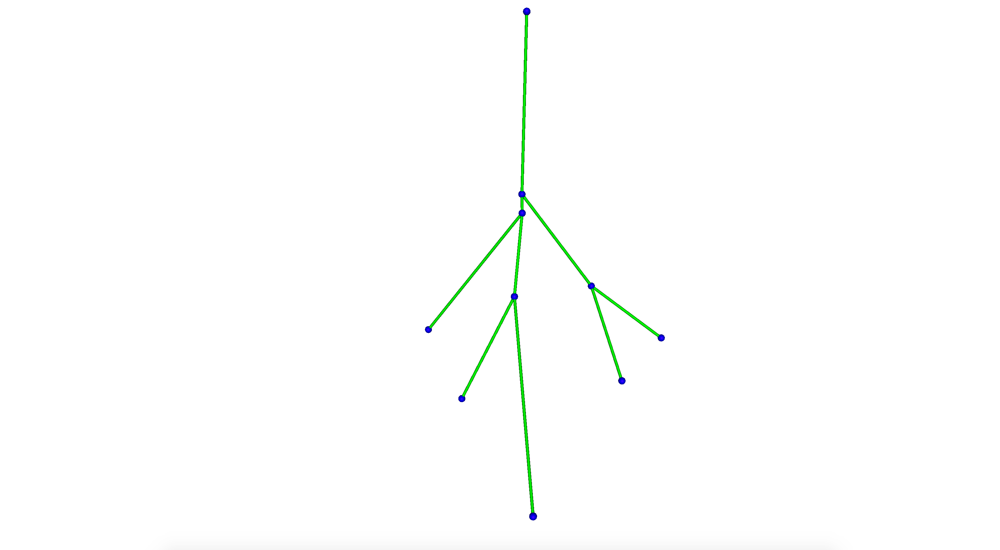
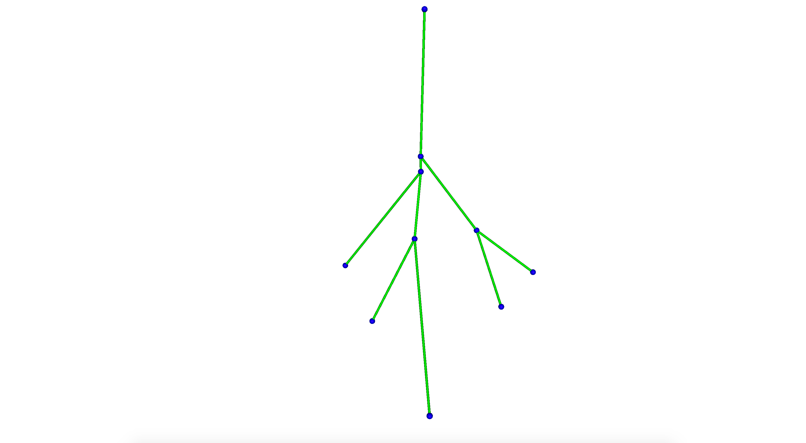

Introduction
The SimVascular 1D Simulation Tool is used to interactively create the geometry, boundary conditions and solver parameters needed to execute a sv1DSolver simulation. The sv1DSolver solves for blood pressure and flow in deformable one-dimensional hemodynamic networks. These equations offer a relatively efficient means to reproduce realistic wave propagation phenomemon in vascular networks. One-dimensional networks can be coupled to both 0D lumped parameter models and to more complex 3D flow simulations as boundary conditions.
Centerlines Geometry
The geometry of the one-dimensional networks used for a 1D simulation is based on the centerlines computed from the surface of a 3D geometric model. The 3D geometric model is created from image data using the typical SimVascular modeling workflow .
Centerlines represent a 1D characterization of blood vessel geometry. The centerlines are computed for a 3D surface using the Vascular Modeling Toolkit . The computation solves a wave propagation problem using a source point representing the start of the centerlines and target points representing the ends of the centerlines. The source and target points are selected from the model caps defined in the SimVascular Modeling Tool.


Network Geometry and 1D Simulation Mesh
The centerlines geometry is used to define network nodes at vessel inlets, outlets and branching points. A number of cylindrical segments are defined representing the length and diameter between vessel nodes.

Segments are then discretized into a mesh of finite elements in order to numerically solve the 1D equations of fluid flow in deformable vessels.

Units
All model quantities and associated boundary conditions are specified in CGS units.
1D Simulation Tool
The SimVascular 1D Simulation Tool is used to interactively create an input file defining the geometry, boundary conditions, material properties and solver parameters needed to execute a 1D solver simulation. A 1D Simulation Tool instance is created by right-clicking on the Simulations1d node under the SV Data Manager. Selecting the Create 1D Simulation job menu item displays a popup window.

Use the Select Model list to select the 3D geometric surface model used to create centerlines. The list contains the names of all models created by any SimVascular Modeling Tool instance. Type in a job name used to identify the Simulations1d Tool instance and to name the files and directories stored under the SimVascular project’s Simulations1d directory. Selecting OK creates an Simulations1d Tool instance node under the SV Data Manager. Selecting this instance displays the Simulations1d Tool panel.

The panel contains seven sub-panels used to create or input a specific category of data needed to execute a 1D solver simulation.
- 1D Mesh
- Basic Parameters
- Inlet and Outlet BCs
- Wall Properties
- Solver Parameters
- Create Files and Run Simulation
- Convert Results
A selecting a sub-panel name brings up the sub-panel’s widgets. The following sections describe how each of the sub-panels are used.
1D Mesh Panel
The 1D Mesh panel is primarily used to create centerlines from the surface of a 3D geometric model. A source for the centerline computation must first be selected from the inlet/outlet faces (model caps) defined by the Modeling Tool. The number of elements used to discretize a segment may be controled by setting the element size.
Panel Layout
Usage
Model - The name of the model used to create centerlines. The model is selected when creating the simulation job. This text box is for display only, a model name cannot be entered.
Select Inlet Face - Select the source for the centerline computation. Clicking on this button causes a multi-element check box to appear with entries for each model inlet/outlet face. A (single) face is selected, typically vessel inlet.

Inlet Face - The model face name used as a source for the centerline computation. This text box is for display only, a face name cannot be entered.
Calculate Centerlines - Start the centerline computation.
Element size - Set the size of elements used to discretize a segment.
Basic Parameters Panel
The Basic Parameters panel is used to set the fluid physical parameters.
Panel Layout
The panel GUI contains a single table.

Usage
Values may be entered in the table by double clicking in the Value column.
Fluid Density - The value of the fluid density used for simulations.
Fluid Viscosity - The value of the fluid Viscosity used for simulations.
Inlet and Outlet BCs Panel
The Inlet and Outlet BCs panel is used to set the boundary condition type and parameter values for each inlet and outlet face defined for the model. The following types of boundary conditions are supported
- Prescribed velocites
- Resistance
- RCR
Panel Layout
The panel GUI contains a single table listing the inlet and outlet faces defined for the model. The panel shown below has three inlet and outlet faces defined.

Usage
The boundary condition type and associated parameter values are changed by double clicking on a face name in the Name column. This displays a Set Inlet/Outlet BCs popup window. The parameters displayed in the window depend on the boundary condition type


Prescribed velocites
The Prescribed velocites boundary condition defines a flow waveform for an inlet face. The inlet flow rates are provided by a text file with time and flow value colums.
Usage
Analytic Shape - Defines the shape of the velocity profile: parabolid, plug or wormersley.
Point Number - Defines ?
Fourier Modes - Defines ?
Flow rate (from file) - Selecting the … brings a file browser used to selected a flow file.
Period -
Flip normal -
Resistance
The Resistance boundary condition defines the downstream resistance for an outlet face.
Usage
Resistance - The resistance parameter that characterizes the downstream vasculature.
Distal Pressure - Defines ?
RCR
The RCR boundary condition defines the downstream resistance for an outlet face.
Usage
Rp C Rd - The resistance parameter that characterizes the downstream vasculature.
Distal Pressure - Defines ?
Wall Properites Panel
The Wall Properites panel is used to set the material properties for vessel walls. The following material models are supported
- Linear
- Olufsen
Panel Layout
The panel GUI contains parameters that vary with the material model selected by the Material Model combination box.


Usage
The boundary condition type and associated parameter values are changed by double clicking on a face name in the Name column.
This displays a Set Inlet/Outlet BCs popup window. The parameters displayed in the window depend on the boundary condition
type
Linear
The Linear material model.
Usage
Eh/r - The product of elastic modulus and thickness divided by the radius.
Pressure - The material reference pressure.
Olufsen
The Olufsen material model.
Usage
K1, K2, K3 - The empirically-derived constants used to best fit the equation $Eh/r_0(z) = k_1 \exp(k_2 r_0(z)) + k_3 $.
Exponent - The material exponent.
Pressure - The material reference pressure.
Solver Parameters Panel
The Solver Parameters panel is used to set the parameters needed to execute the 1D Solver.
Simulation results are computed for times Time Step Size*i, i = 0,1,2,…,Number of Time Steps but are
only written with the frequency given by Number of Timesteps between Saving Data.
Panel Layout
The panel GUI contains a single table listing Time Step and Output Control solver parameters.

Usage
Values may be entered in the table by double clicking in the Value column.
Number of Time Steps - The number of time steps to use for the 1D simulation.
Time Step Size - The size of the time step to use for the 1D simulation. Time step size affects numerical error and stability.
Number of Timesteps between Saving Data - The number of time steps to skip when saving 1D simulation results.
Create Files and Run Simulation Panel
The Create Files and Run Simulation panel is used to create a 1D solver input file and run the 1D solver.
Panel Layout
Usage
Create Files for Simulation - Create a 1D solver input file.
Run Simulation - Run the 1D solver.
Convert Results
The Convert Results panel is used to convert 1D simulation results to a CSV file format.
The simulation results directory must contain a 1D solver input file named solver.in and results (.dat) files. Simulation results are stored in the project’s Simulations1d/JOBNAME directory.
Results can be selectively converted for segements at vessel outlets.
A time range start/stop values can be given to only convert results within that range. The data conversion times are determined by the parameter values specified in the Solver Parameters panel.
The 1D solver writes results for cross-section area, flow, pressure, Reynolds number (Re), and wall shear stress (wss). Results can be selectively converted for one or more of these data.
Panel Layout

Usage
Results Directory - Set the directory containing the 1D simulation results to convert. The directory path can be entered in the text box. Selecting … brings up a file browser.
Convert Directory - Set the directory where converted results are written. The directory path can be entered in the text box. Selecting … brings up a file browser.
Start - Set the start time for the time range usded to convert simulation data. The time is a real simulation time value.
Stop - Set the stop time for the time range usded to convert simulation data. The time is a real simulation time value.
Segements - Set the segment type used to convert data. Select Outlet to convert data only for segments that have an outlet boundary condition. Select All for converting data for all segments.
Data - Set the names of data to convert.
Convert - Convert the 1D simulation results.
Tutorial
This section demonstrates how to use the 1D Simulation Tool to interactively create the geometry, boundary conditions and solver parameters needed to execute a sv1DSolver simulation. The geometry of the one-dimensional networks used for a 1D simulation is based on the model of the aorta and branching left and right iliac vessels created in the Demo Project discussed in the SimVascular QuickGuide documentation.
A flow rate inlet boundary condition is used for the aorta inlet. RCR boundary conditions are used for left and left and right iliac vessels.
An Olufsen material model is used for the vessel wall properties.
Open the Demo Project
Opening the Demo Project displays the image slices and model geometry. Change the display layout to big 3D and hide the image to get a better view of the model.


Create an instance of the 1D Simulation Tool
Create an instance of the 1D Simulation Tool by right clicking on the SV Data Manager Simulations1d node and selecting Create 1D Simulation job from the popup menu.

A box is then displayed that is used to select a model name and to enter the name of the 1D simulation job to create. The Select Model is set to the default model name demo, the only model defined. Enter demo in the Job Name text box to create a 1D simulation job named demo. Click OK.

A node named demo is created under SV Data Manager Simulations1d. Left clicking on this node brings up the 1D Simulation Tool GUI panel on the right side of the SimVascular window. The model name is displayed in the Model text box. The model surface representation is changed to wireframe to better show centerlines geometry when it is created.

Create centerlines geometry
Select a model inlet face for the start of the centerlines by clicking on the Select Inlet Face button. This brings up a check box listing all of the caps (inlet/outlet faces) defined for the demo model. Select the cap_aorta entry box under the Use column of the check box.

The inlet face selected is displyed in the Inlet Face text box. Click on the Calculate Centerlines button to start the centerlines computation for the demo surface 3D geometric model. When the computation finishes the centerlines geometry is displyed using green lines.

Set inlet and outlet boundary conditions
Select the Inlet and Outlet BCs sub-panel name to bring up the Inlet and Outlet BCs panel used to set the boundary condition type and parameter values for each inlet and outlet face defined for the model.
The panel contains a table listing the inlet (cap_aorta) and two outlet (cap_right_iliac and cap_aorta_2) faces defined for the model.
Set cap_aorta inlet flow boundary condition
Double click with the left mouse button on cap_aorta under the Name column. This brings up a Set Inlet/Outlet BCs popup window. To set an inlet flow boundary condition2) Left click on the Flow rate (from file) … button to bring up a file browser
3) Select the inflow.flow file from the project’s flow-files directory
4) Select OK

Set cap_right_iliac RCR boundary condition
Double click with the left mouse button on caprightiliac under the Name column. This brings up a Set Inlet/Outlet BCs popup window. To set an RCR boundary condition2) Enter 90 0.0008 1200 into the $R_p C R_d$ text box
3) Select OK

Set cap_aorta_2 RCR boundary condition
Double click with the left mouse button on cap_aorta_2 under the Name column. This brings up a Set Inlet/Outlet BCs popup window. To set the values for the RCR boundary condition2) Enter 100 0.0004 1100 into the $R_p C R_d$ text box
3) Select OK

The boundary condition and parameter values for each inlet and outlet faces are now defined and are shown in the Inlet and Outlet BCs panel table. Boundary conditions may also be directly entered into the table by double clicking with the left mouse button on the BC Type and Values columns.

Set wall properties
Select the Wall Properties sub-panel name to bring up the Wall Properties panel used to set the material properties for vessel walls.
To set the material model to Olufsen
2) Enter 2.0e7 into the $K_1 $ text box
3) Enter 8.65e5 into the $K_3 $ text box
4) Enter 113324.0 into the Pressure text box

Set solver parameters
Select the Solver Parameters sub-panel name to bring up the Solver Parameters panel used to set the parameters needed to execute the 1D Solver.

To set the solver parameters
2) Double click with the left mouse button on the Time Steps Size Values column and enter 0.001.
3) Double click with the left mouse button on the Number of Timesteps between Saving Data Values column and enter 1.

Create the 1D Solver input file and run a simulation
Select the Create Files and Run Simulation sub-panel name to bring up the Create Files and Run Simulation panel used to used to create a 1D solver input file and run the 1D solver.

To generate the 1D Solver input file click on the Create Files for Simulation button. A popup window is displayed showing the number of segments, nodes and finite elements created for the 1D simulation.

Click OK.
To run a 1D Solver simulation on the Run Simulation button. A popup window is displayed when the simulation finishes.

Selecting the Show Details button dispays the 1D Solver log file
--------------------------------- oneDSolver 1D Finite Element Hemodynamics --------------------------------- Reading file: /SVProject/Simulations1d/demo/solver.in ... Printing Model Echo ... Creating and Running Model ... Creating Nodes ... Creating Joints ... Creating Materials ... call cvOneMaterialsOlufsen p1_=113324.014500 K3_=0.000000 Setting material K's 0 -22.5267 1e+07 ... Setting reference Pressure 0 call SetMaterialType K3_ 10000000.000000 new cvOneMaterialOlufsen called check pRef 0.000000 Creating Data Tables ... Creating Segments ... Solving Model ... Inlet Condition Type: FLOW ~~~~~~~~~~~~~~~~~~~~~~~~~~~~~~~~~ Number of Joints: 1 Number of Segments: 3 ~~~~~~~~~~~~~~~~~~~~~~~~~~~~~~~~~ call cvOneMaterialsOlufsen p1_=113324.014500 K3_=33.690970 In GetNewInstance cvOneDMaterialOlufsen is called matID=0 call cvOneDMaterialOlufsen that this K3_=10000000.000000 p1_=0.000000 In GetNewInstance cvOneDMaterialOlufsen* materials is called subdomain cpp setupMaterial matID=0 call cvOneMaterialsOlufsen p1_=113324.014500 K3_=0.000000 In GetNewInstance cvOneDMaterialOlufsen is called matID=0 call cvOneDMaterialOlufsen that this K3_=10000000.000000 p1_=0.000000 In GetNewInstance cvOneDMaterialOlufsen* materials is called subdomain cpp setupMaterial matID=0 RCR boundary condition call cvOneMaterialsOlufsen p1_=113324.014500 K3_=0.000000 In GetNewInstance cvOneDMaterialOlufsen is called matID=0 call cvOneDMaterialOlufsen that this K3_=10000000.000000 p1_=0.000000 In GetNewInstance cvOneDMaterialOlufsen* materials is called subdomain cpp setupMaterial matID=0 RCR boundary condition Subdomain No. 3 Joint No. 1 Outlet No. 2 Number of equations 1303 Using Conservative Form ... maxStep/stepSize: 10000 Total Solution is: 10000 x 1303 **** Time cycle 1 iter: 0 normf: 134.606 norms: 0.00421471 time: 0.001614 iter: 1 normf: 43.8713 norms: 0.0246538 time: 0.001102 iter: 2 normf: 1.14964 norms: 1.17156e-05 time: 0.001108 iter: 3 normf: 0.0299168 norms: 5.84007e-08 time: 0.001096 iter: 4 normf: 0.000699028 norms: 1.16806e-09 time: 0.001097 iter: 5 normf: 2.68722e-05 norms: 3.94369e-11 time: 0.001097 Time = 0.001, Mass = 0.0169997, Tot iters = 6 iter: 0 normf: 81.4714 norms: 0.0257353 time: 0.001099 iter: 1 normf: 7.04379 norms: 4.91323e-05 time: 0.001204 iter: 2 normf: 0.288877 norms: 3.82307e-07 time: 0.001262 iter: 3 normf: 0.0109262 norms: 2.31787e-08 time: 0.001136 ... Time = 9.998, Mass = 0.0889071, Tot iters = 4 iter: 0 normf: 0.732147 norms: 0.000141274 time: 0.001097 iter: 1 normf: 0.394251 norms: 0.000232438 time: 0.001099 iter: 2 normf: 0.0100552 norms: 5.84729e-09 time: 0.001096 iter: 3 normf: 0.000314998 norms: 4.17093e-11 time: 0.001097 Time = 9.999, Mass = 0.0899291, Tot iters = 4 iter: 0 normf: 0.734032 norms: 0.000143682 time: 0.001099 iter: 1 normf: 0.384852 norms: 0.000227006 time: 0.001096 iter: 2 normf: 0.00978278 norms: 5.759e-09 time: 0.001096 iter: 3 normf: 0.000306487 norms: 4.06793e-11 time: 0.001098 Time = 10, Mass = 0.0908278, Tot iters = 4 demoGroup0_Seg0_flow.dat demoGroup0_Seg0_area.dat demoGroup0_Seg0_pressure.dat demoGroup0_Seg0_Re.dat demoGroup0_Seg0_wss.dat demoGroup2_Seg1_flow.dat demoGroup2_Seg1_area.dat demoGroup2_Seg1_pressure.dat demoGroup2_Seg1_Re.dat demoGroup2_Seg1_wss.dat demoGroup3_Seg2_flow.dat demoGroup3_Seg2_area.dat demoGroup3_Seg2_pressure.dat demoGroup3_Seg2_Re.dat demoGroup3_Seg2_wss.dat Completed!
Convert and simulation results
Select the Convert Results sub-panel name to bring up the Convert Results panel used to used to convert 1D solver simulation results to CSV format files.

Set the Results Directory by selecting … to bring up a file browser. Navigate to the /PROJECT/Simulations1d/demo/ directory and press Open. Set the time range Start value 0.0 and the Stop value to 0.8. From the Data scrolling text box select flow and pressure data. Select the Convert button to convert the results.

The CSV files for flow and pressure results are stored in the /PROJECT/Simulations1d/demo/demo-converted-results directory. The CSV files can be graphed using several applications (gnuplot, MATLAB, ParaView, etc.). Here we have plotted flow results using ParaView.

References
[1] T.J.R. Hughes and J. Lubliner, On the One-Dimensional Theory of Blood Flow in the Larger Vessels , Mathematical Biosciences, 18(1-2) (1973), 161-170.
[2] T.J.R. Hughes, A Study of the One-Dimensional Theory of Arterial Pulse Propagation, 1974, U.C. Berkeley, Ph.D. Thesis.
1D Solver
The one-dimensional equations for the flow of a Newtonian, incompressible fluid in a deforming, elastic domain consist of the continuity equation, a single axial momentum balance equation, a constitutive equation, and suitable initial and boundary conditions. The governing equations are derived in a general form by Hughes[2] and Hughes and Lubliner[1].
A coupled multi-domain method for 1D hemodynamics
Flow and pressure waves, originating due to the contraction of the heart, propagate along the deformable vessels and reflect due to tapering, branching, and other discontinuities. The size and complexity of the cardiovascular system necessitate a multidomain approach, with “upstream” regions of interest (large arteries) coupled to reduced-order models of “downstream” vessels. Previous efforts to couple upstream and downstream domains have included specifying resistance and impedance outflow boundary conditions for the nonlinear one-dimensional wave propagation equations and iterative coupling between three-dimensional and one-dimensional numerical methods. We have developed a new approach to solve the one-dimensional nonlinear equations of blood flow in elastic vessels utilizing a space-time finite element method with GLSstabilization for the upstream domain, and a boundary term to couple to the downstream domain.
The outflow boundary conditions are derived following an approach analogous to the Dirichlet-to-Neumann (DtN) method.
In the downstream domain, we solve simplified 0D/1D equations to derive relationships between pressure and flow accommodating periodic and transient phenomena with a consistent formulation for different boundary condition types. In this chapter, we also present a new boundary condition that accommodates transient phenomena based on a Green’s function solution of the linear, damped wave equation in the downstream domain.
The mathematical formulation, the numerical derivation and results are presented in the next sections.
We present here the different steps that are required to develop the coupled multidomain method from the strong form in the original domain to the variational form in the computational domain that includes the information of the analytical domain.
Strong form
The one-dimensional equations for the flow of a Newtonian, incompressible fluid in a deforming, elastic domain consist of the continuity equation, a single axial momentum balance equation, a constitutive equation, and suitable initial and boundary conditions. The governing equations are derived in a general form by Hughes [2] and Hughes and Lubliner [1]. The partial differential equations for mass and momentum balance are given by (z is the axial coordinate):
$$\frac{\partial S}{\partial t} + \frac{\partial Q}{\partial z} = -\psi$$
$$\frac{\partial Q}{\partial t} + \frac{\partial}{\partial z}\left[(1 + \delta)\,\frac{Q^2}{S}\right] + \frac{S}{\rho}\,\frac{\partial p}{\partial z} = S\,f + N\,\frac{Q}{S} + \nu\frac{\partial^2 Q}{\partial z^2}$$
The primary variables are the cross-sectional area $S$, the pressure $p$, and the volumetric flow rate $Q$. The density of the fluid is given by ρ (assumed constant), the external force by $f$, the kinematic viscosity by $\nu$ (assumed constant) and $\psi$ is an outflow function (taken to be zero for impermeable vessels). The variables $\delta$ and $N$ are defined by the choice of a profile function for the velocity over the cross-section. Here we choose a time-varying, parabolic flow profile, thus Hughes and Lubliner [1]:
$$\delta = \frac{1}{3},\quad N = -8\,\pi\,\nu \label{1} \tag{1} $$
The governing equations are of mixed parabolic-hyperbolic type, but have mainly a hyperbolic nature since the diffusive term is small. We thus impose one boundary condition at each inlet/outlet by specifying values of the primary variables or a relationship between them.
The flow rate is typically specified at the inlet(s) ($\Gamma_in$), but the inlet boundaries can accommodate the same types of boundary conditions as will be subsequently discussed for the outlets:
$$ Q(z,t) = Q_in(t),\quad z\in\Gamma_in $$
The initial conditions for this problem are given by (where $S^0(z)$, $Q^0(z)$ and $p^0(z)$ are prescribed functions):
$$ S(z,0) = S^0(z),Q(z,0) = Q^0(z)\,\text{and}\, p(z,0) = p^0(z) $$
In order to complete the above system, we need to introduce a constitutive relationship. An elastic model is assumed, which relates the pressure to the cross-sectional area as follows:
$$p(z,t) = \tilde{p}[S(z,t),z,t]$$
and its inverse function
$$ S(z,t) = \tilde{S}[p(z,t),z,t] \label{2} \tag{2} $$
The particular constitutive relationship that we have used is that proposed by Olufsen [3]:
$$ \tilde{p}(S,z) = p^0(z) + \frac{4}{3}\,\frac{E\,h}{r^0(z)}\,\left(1 - \sqrt{\frac{S^0(z)}{S(z,t)}}\right) \label{3} \tag{3} $$
here the Young’s modulus $E$ and the wall thickness $h$ relate to the radius $r^0 = \sqrt{S^0(z)/\pi}$:
$$ \frac{E\,h}{r^0(z)} = k_1\,\exp{k_2\,r^0(z)} + k_3 $$
In this relationship, $k_1$, $k_2$, and $k_3$ are empirically-derived constants with values in CGS units of $2x10^{7} g⋅ s^{-2}⋅ cm^{-1}$, $-22.53 cm^{-1}$, and $8.65 x 10^{5} g⋅ s^{-2}⋅ cm^{-1}$, respectively. Here we use a constant initial pressure $p^0(z) = p^0$. By noting that the pressure gradient can be expanded as
$$ \frac{\partial p}{\partial z} = \frac{\partial\tilde{p}}{\partial S}\,\frac{\partial S}{\partial z} + \frac{\partial\tilde{p}}{\partial z} $$
we can rewrite the system of partial differential equations in the following quasi-linear conservative form:
$$ \frac{\partial\mathbf{U}}{\partial t} + \frac{\partial\mathbf{F}}{\partial z} - \mathbf{K}\,\frac{\partial^2\mathbf{U}}{\partial z^2} = G,\,\text{or}\quad\frac{\partial\mathbf{U}}{\partial t} + \frac{\partial\mathbf{F}}{\partial z} - \mathbf{K}\,\frac{\partial^2\mathbf{U}}{\partial z^2} = \mathbf{C}_F\,\mathbf{U} $$
where
$$ \mathbf{U} = \begin{bmatrix}U_1\ \cr U_2 \end{bmatrix} = \begin{bmatrix} S \cr Q \end{bmatrix} \label{4} \tag{4} $$
$$ \mathbf{F} = \begin{bmatrix} U_2 \cr (1 + \delta)\,\frac{U_2^2}{U_1} + \frac{1}{\rho}\,\int_{p^0}^{p(z,t)}\tilde{S}(p,z,t)\,dp \end{bmatrix}, \quad \mathbf{K} = \begin{bmatrix} 0 & 0 \cr 0 & \nu\ \end{bmatrix} $$
$$ \mathbf{G} = \begin{bmatrix} -\psi \cr U_1\,f + N\,\frac{U_2}{U_1} + \int_{p^0}^{p}\frac{1}{\rho}\,\frac{\partial\tilde{S}(p,z,t)}{\partial z}\,dp \end{bmatrix},\quad $$
$$ \mathbf{C}_F = \begin{bmatrix} -\frac{\psi}{U_1} & 0 \cr f + \frac{1}{U_1}\,\int_{p^0}^{p}\frac{1}{\rho}\,\frac{\partial\tilde{S}(p,z,t)}{\partial z}\,dp & \frac{N}{U_1} \end{bmatrix} $$
The motivation to work with the conservative form rather than the advective form as in previous work [4], is to be able to integrate by part the convective term and obtain a flux (a boundary integral) through which the multidomain coupling can be performed.
Note that in the advective form, the only term that can easily be integrated by parts is the longitudinal viscous term, which is very small and often neglected in one-dimensional theory. Thus, the main difference between the two forms is the treatment of the boundary conditions.
In the present conservative formulation, boundary conditions are prescribed in a natural way. In contrast, in the advective form, boundary conditions are enforced in an essential way: the equation for the corresponding dof is replaced by an equation representing the boundary condition.
Weak form
The weak formulation of the initial boundary value problem is given as follows with $\Omega = [0, L]$ : find $\mathbf{U}$ in $\mathcal{V} = {\mathbf{U}:\Omega\times (0,T)\rightarrow\mathbb{R}^2\,|\,\mathbf{U}(z,t)\in H_0^1}$ such that $\forall\,\mathbf{W} = \left[W_1\,W_2\right]^T\in\mathcal{V}$,
$$ \begin{eqnarray} & \int_{0}^{t}\int_{0}^{L}\left(-\mathbf{W}_{,t}^T\,\mathbf{U} - \mathbf{W}_{,z}^T\,\mathbf{F} + \mathbf{W}_{,z}^T\,\mathbf{K}\,\mathbf{U}_{,z}-\mathbf{W}^T\,\mathbf{G}\right)\,dz\,dt + \int_{0}^{T} \left[\mathbf{W}^T\left(\mathbf{F}-\mathbf{K}\mathbf{U}_{,z}\right)\right]\_{0}^{L}\,dt + \cr & \int_{0}^{L}\mathbf{W}^T(z,T)\mathbf{U}(z,T)\,dz - \cr & \int_{0}^{L}\mathbf{W}^T(z,0)\,\mathbf{U}^0(z)\,dz = 0 \end{eqnarray} $$
where the initial condition is given by $\mathbf{U}^0(z) = \left[S^0(z),Q^0(z)\right]^T$. The boundary conditions are not specified at this point.
Disjoint Decomposition
We adopt the disjoint decomposition approach described in 2.3 to derive appropriate outflow boundary conditions. First, we divide our spatial domain $\Omega=[0,L]$ into an upstream numerical domain $\Omega^{n}: z\in(0,B)$, and a downstream analytic domain $\Omega^{a}: z\in(B,L)$.
The boundary that separates these domains is defined as $\Gamma_{B} : z = B$. We define a disjoint decomposition of our variables, for example for our unknown solution vector $\mathbf{U}$
$$\mathbf{U} = \mathbf{U}^{n} + \mathbf{U}^{a}$$
so that
$$\mathbf{U} = \begin{cases} \mathbf{U}^{n} & z\in\Omega^{n} \cr \mathbf{U}^{a} & z\in\Omega^{a} \end{cases}$$
We use a similar decomposition for our weighting function, $\mathbf{W}$ , and insert these expressions into our variational form.
The disjoint nature of this expression is used to derive a new variational form for the 1D numerical domain: we obtain the original variational form specialized to the 1D numerical domain $\Omega^{n}$ with the addition of a boundary term accounting for the interface to the 1D analytic domain, $\Omega^{a}$
$$\begin{eqnarray} & \int_{0}^{t}\int_{0}^{B}\left(-\mathbf{W}_{,t}^{n\,T}\,\mathbf{U}^{n} - \mathbf{W}_{,z}^{n\,T}\,\mathbf{F}(\mathbf{U}^{n}) + \mathbf{W}_{,z}^{n\,T}\,\mathbf{K}\,\mathbf{U}^{n}_{,z}-\mathbf{W}^{n\,T}\,\mathbf{G}(\mathbf{U}^{n})\right)\,dz\,dt \cr & -\int_{0}^{B}\,\mathbf{W}^{n\,T}(z,T)\,\mathbf{U}^{n}(z,T)\,dz + \int_{0}^{B}\mathbf{W}^{n\,T}(z,0)\,\mathbf{U}^{n}(z,0)\,dz + \cr & \int_{0}^{T}\left[\mathbf{W}^{n\,T}\left(\mathbf{F}(\mathbf{U}^{n}) - \mathbf{K}\,\mathbf{U}^{n}_{,z}\right)\right]_{z=0}\,dt - \int_{0}^{T}\left[\mathbf{W}^{a\,T}\left(\mathbf{F}(\mathbf{U}^{a}) - \mathbf{K}\,\mathbf{U}^{a}_{,z}\right)\right]_{z=B}\,dt = 0 \end{eqnarray} \label{5} \tag{5} $$
Now, we enforce the continuity of the weighting function at the interface:
$$ \mathbf{W}^{a}\vert_{z=B} = \mathbf{W}^{n}\vert_{z=B} $$
and define the operators $\mathbf{M}$ and $\mathbf{H}$ on the $\Omega^{a}$ domain based on the model of the downstream domain:
$$\left[\mathbf{M}(\mathbf{U}^{a})\right]_{z=B} = \left[\mathbf{F}(\mathbf{U}^{a}) - \mathbf{K}\mathbf{U}^{a}_{,z}\right]_{z=B} $$
$\mathbf{M}$ acts on the solution variables and $\mathbf{H}$ depends only on other terms like initial conditions, boundary conditions, and physical properties in the downstream domain.
Finally, we enforce the continuity of the flux at the boundary:
$$ \left[\mathbf{M}(\mathbf{U}^{n})\right]_{z=B} = \left[\mathbf{M}(\mathbf{U}^{a})\right]_{z=B} \label{6} \tag{6} $$
The final result is
$$ \begin{eqnarray} & \int_{0}^{t}\int_{0}^{B}\left(-\mathbf{W}_{,t}^{n\,T}\,\mathbf{U}^{n} - \mathbf{W}_{,z}^{n\,T}\,\mathbf{F}(\mathbf{U}^{n}) + \mathbf{W}_{,z}^{n\,T}\,\mathbf{K}\,\mathbf{U}^{n}_{,z}-\mathbf{W}^{n\,T}\,\mathbf{G}(\mathbf{U}^{n})\right)\,dz\,dt \cr & -\int_{0}^{B}\,\mathbf{W}^{n\,T}(z,T)\,\mathbf{U}^{n}(z,T)\,dz + \int_{0}^{B}\mathbf{W}^{n\,T}(z,0)\,\mathbf{U}^{n}(z,0)\,dz + \cr & \int_{0}^{T}\left[\mathbf{W}^{n\,T}\left(\mathbf{F}(\mathbf{U}^{n}) - \mathbf{K}\,\mathbf{U}^{n}_{,z}\right)\right]_{z=0}\,dt - \int_{0}^{T}\left[\mathbf{W}^{n\,T}\left(\mathbf{M}(\mathbf{U}^{n}) + \mathbf{H}\right)\right]_{z=B}\,dt = 0 \end{eqnarray} $$
We see that the solution in the numerical domain depends on the operators $\mathbf{M}$ and $\mathbf{H}$ defined by the mathematical model of the downstream domain but not the solution variable, $\mathbf{U}^{a}$, in the downstream domain.
The Map from the “DtN” Method
The operators $\mathbf{M}$ and $\mathbf{H}$ are based on the mathematical model of the downstream domain using an approach based on the “Dirichlet-to-Neumann” method [5-7,9]. The physics of the downstream domain depends on the upstream domain. Thus, an explicit solution on the downstream domain cannot be obtained. Instead, a relationship between the unknowns that incorporates all the information of the model, the map, is derived. The DtN map is then inserted into the flux term previously described $eq20$, to derive the operators $\mathbf{M}$ and $\mathbf{H}$. In practice, the contribution of the diffusive flux term $\mathbf{K}\mathbf{U}_{,z}$ is observed to be negligible in the boundary integral and is hence omitted in deriving an expression for $\mathbf{M}$ and $\mathbf{H}$ from equations $\eqref{4}$ and $\eqref{6}$:
$$ \begin{eqnarray} M_1(Q,S) + H_1 & = Q \cr M_2(Q,S) + H_2 & = (1 + \delta)\,\frac{Q^2}{S} + \frac{1}{\rho}\int_{p_0}^{p} \tilde{S}(p,z,t)\,dp \end{eqnarray} \label{7} \tag{7} $$
Note that the boundary conditions are not exact since, at a minimum, a linear approximation is employed in the downstream domain whereas a nonlinear model is used in the upstream domain.
Resistance (0D, constant in time)
We can distinguish between instantaneous and memory cases. An example of an instantaneous map is when a simple proportional relationship is prescribed between pressure at time $t$ and flow at the same point in time that represents the resistance to flow of the downstream domain, $Q(B,t) = p(B,t)/R$. The resistance $R$ can be measured, taken from the literature or derived for Poiseuille flow (steady flow) or other models. Then using equations $\eqref{1}$, $\eqref{2}$, $\eqref{3}$, and integrating the pressure term in $\eqref{7}$:
$$\begin{eqnarray} M_1(S) & = \frac{\tilde{p}(S,B)}{R},\quad H_1 = 0 \cr M_2(S) & = \frac{4}{3}\,\frac{M_1(S)^2}{S} + frac{4\,\sqrt{\pi}}{3}\,\frac{E\,h}{\rho}\,\sqrt{S},\quad H_2 = -\frac{4}{3\,\rho}\,E\,h\,\pi\,r^{0}(B) \end{eqnarray}$$
Windkessel RCR circuit model (0D, fully transient)
Flow and pressure are related by the following relationship
$$Q(B,t) = \left[Q(B,0) - \frac{p^0(B)}{R}\right]\exp(-\alpha\,t) + \frac{p(B,t)}{R} - \frac{1}{R^2\,C}\,\int_{0}^{t} p(B,\tau)\exp(-\alpha(t-\tau))\,d\tau$$
$$\alpha = \frac{R + R_d}{R\,R_d\,C}$$
Then using equations $\eqref{1}$, $\eqref{2}$ and $\eqref{3}$, and integrating the pressure term in $\eqref{7}$:
$$M_1(S) = \frac{\tilde{p}[S(B,t),B,t]}{R} - \frac{1}{R^2\,C}\,\int_{0}^{t}\tilde{p}[S(B,\tau),B,\tau]\,\exp(-\alpha(t-\tau))\,d\tau$$
$$H_1 = \left[Q(B,0) - \frac{p^0(B)}{R}\right]\exp(-\alpha\,t)$$
$$M_2(S) = \frac{4}{3}\,\frac{[M_1(S) + H_1]^2}{S} + \frac{4\,\sqrt{\pi}}{3}\,\frac{E\,h}{\rho}\,\sqrt{S}$$
$$H_2 = -\frac{4}{3\,\rho}\,E\,h\,\pi\, r^{0}(B)$$
The flow rate at time $t$ depends on the entire history of the pressure represented by the time integral in the above equations.
Impedance (1D, periodic)
Another example of a memory map is the impedance model: the downstream domain is approximated using linear wave propagation theory and we further assume that the solution is periodic in time. We can then derive
$$Q(B,t) = \frac{1}{T}\int_{t-\tau}^{t}\,p(B,\tau)\,y(B,t-\tau)\,d\tau \label{8} \tag{8} $$
The flow rate at time $t$ depends on the history of the pressure over one period. Here $y(B,t)$ is the inverse Fourier transform of the admittance function The representation formula for the operators then reads, using equations $\eqref{1}$, $\eqref{2}$, $\eqref{3}$, $\eqref{7}$, $\eqref{8}$:
$$M_1(S) = \frac{1}{T}\,\int_{t-\tau}^{t}\,\tilde{p}\left[S(B,\tau),B\right]\,y(B,t-\tau)\,d\tau,\quad H_1=0$$
$$M_2(S) = \frac{4}{3}\,\frac{M_1(S)^2}{S} + \frac{4\,\sqrt{\pi}}{3}\,\frac{E\,h}{\rho}\,\sqrt{S},\quad H_2 = -\frac{4}{3\,\rho}\,E\,h\,\pi\, r^{0}(B)$$
The flow rate at time $t$ depends on the history of the pressure over one cardiac cycle represented by the time integral in the above equations.
Wave in a tube (1D, fully transient)
Another example of a memory map is the more general one-dimensional wave equation. The derivation of a minimally reflecting boundary condition for the one-dimensional non-linear equations using the wave equation for the downstream domain has been inspired by the work of Givoli, Grote and colleagues [7-9] on exact nonreflecting boundary conditions for the linear wave equation. For this latter case, we approximate the downstream domain using one-dimensional linear wave propagation theory but do not assume periodicity in time. As an example, in the case where the downstream domain is a single elastic vessel with length $l$ and wave speed $c$, going from the boundary point $B$ to the far end point $L$, we derived a map with the related Green’s function that relates cross-sectional area and its derivative at the inlet of a segment:
$$\frac{\partial S}{\partial z}(B,t) = -\frac{S(B,t)}{l} + \exp(\gamma\, t)\,\int_{0}^{t}\int_{B}^{L}\,\frac{\partial G}{\partial z}(B,t,z_0,t_0)\,f_B(z_0,t_0)\,dz_0\,dt_0 + \mathcal{H}(t)$$
Furthermore we integrate the balance of momentum equation in time to obtain:
$$Q(B,t) = -c^2\,\int_{0}^{t}\,\frac{\partial S}{\partial z}(B,t)\,\exp(2\gamma(t-t_0))\,dt_0 + Q^0(B)\exp(2\,\gamma\,t)$$
We can then derive a map between the flow rate and the cross-sectional area using (3.29) and (3.30):
$$Q(B,t) = c^2\,\int_{0}^{t}\left[\frac{S(B,t^{*})}{l} - \exp(\gamma\,t^{*})\,\int_{0}^{t^{*}}\int_{B}^{L}\frac{\partial G}{\partial z}(B,t^{*},z_0,t_0)\,f_{B}(z_0,t_0)\,dz_0\,dt_0\right]\exp(2\,\gamma\,(t-t^{*}))\,dt^{*} + c^2\,\int_{0}^{t}\mathcal{H}(t^{*})\exp(2\,\gamma\,(t-t^{*}))\,dt^{*} + Q^0(B)\exp(2\,\gamma\,t) $$
After integrating by parts in time, the derivatives that constitute $f_B(z_0,t_0)$, and using the Green’s function $\eqref{5}$, the final map reads:
$$Q(B,t) = \frac{c^2}{l}\,\int_{0}^{t}\left[1 + \sum_{n=1}^{\infty}2\right]\,S(B,t^{*})\exp(2\,\gamma\,(t-t^{*}))\,dt^{*} -\left(\frac{c}{l}\right)^3\,\int_{0}^{t}\exp(\gamma\,(2\,t - t^{*}))\int_{0}^{t^{*}}\,S(B,t_0)\exp(-\gamma\,t_0)\left[\sum_{n=1}^{\infty}\frac{2\,n^2\,\pi^2}{\sqrt{\lambda_n}}\,\sin(c\,\sqrt{\lambda_n}(t^{*}-t_0))\right]\,dt_0\,dt^{*} + Q^0(B)\exp(2\,\gamma\,t) + \Theta\,\left[S^0(B), \dot{S}_0(B), S_L(t),\dot{S}_L(t),\ddot{S}_L(t)\right] \label{9} \tag {9} $$
and
$$\Theta\,\left[S^0(B), \dot{S}_0(B), S_L(t),\dot{S}_L(t),\ddot{S}_L(t)\right] = - \left[\sum_{n=1}^{\infty}\frac{2\,c}{l\,\sqrt{\lambda_n}}\,\sin(c\,\sqrt{\lambda_n}\,t)\right]\exp(\gamma\,t)\,S(B,0) + \left[\sum_{n=1}^{\infty}\,\frac{2\,l}{c\,n^2\,\pi^2\,\sqrt{\lambda_n}}\left(\gamma\,\sin(c\,\sqrt{\lambda}\,t)\right) + c\,\sqrt{\lambda_n}\,\left(\cos(c\,\sqrt{\lambda_n}\,t) - \exp(\gamma\,t)\right)\right]\exp(\gamma\,t)\,\dot{S}(B,0) + -c^2\int_{0}^{t}\mathcal{H}(t^{*})\exp(2\,\gamma\,(t-t^{*}))\,dt^{*}$$
The operators for the wave boundary condition can now be derived using $\eqref{7} and $\eqref{9},, assuming as for the upstream numerical domain that the initial cross-sectional area is the same as the reference cross-sectional area:
$$Q(B,t) = M_1(S) + H_1,\, \gamma = \frac{N}{2\,S^{0}},\, \forall n \in \mathbb{N}_{>0},\,\lambda = \frac{n^2\,\pi^2}{l^2} - \frac{\gamma^2}{c^2}$$
$$M_1(S) = \frac{c^2}{l}\int_{0}^{t}\left[1 + \sum_{n=1}^{\infty}\,2\right]\,S(B,t^{*})\exp\left[2\gamma(t-t^{*})\right]\,dt^{*} - \left(\frac{c^2}{l}\right)^3\,\int_{0}^{t}\exp\left[\gamma(2t - t^{*})\right]\int_{0}^{t^{*}}S(B,t_0)\exp(-\gamma\,t_{0})\left[\sum_{n=1}^{\infty}\frac{2\,n^2\,\pi^2}{\sqrt{\lambda_n}}\,sin\left(t^{*} - t_{0}\right)\right]\,dt_0\,dt^{*}$$
$$H_1 = Q^{0}(B)\exp\left(2\,\gamma\,t\right) + \Theta\left[S^0(B), \dot{S}^{0}(B), S_L(t), \dot{S}_L(t), \ddot{S}_L(t)\right]$$
$$M_2(S) = \frac{4}{3}\frac{\left[M_1(S) + H_1\right]^2}{S} + \frac{4\,\sqrt{\pi}}{3}\frac{E\,h}{\rho}\sqrt{S}$$
$$H_2 = -\frac{4}{3\,\rho}\,E\,h\,\pi\,r^0(B)$$
The flow rate is a function of pressure history and depends also on waves coming from the far end boundary conditions and the initial conditions everywhere in the downstream domain. For simplicity, we implemented the equation above assuming that the initial state corresponded to the static solution around which the wave equation is derived, with zero initial derivative of the cross-sectional area and a constant distant cross-sectional area.
The DtN map has now been derived for a variety of boundary conditions. The reader interested in the effect of a different boundary condition can follow the same approach to derive the corresponding map. In particular, this approach can be applied for complex lumped models of the coronary bed, and can also be performed very similarly for lumped-parameter heart models at the inlet of the numerical domain.
Finite Element Discretization
We employ a stabilized space-time finite element method, known for its robustness, based on the Discontinuous Galerkin method in time. The procedure presented herein employs ideas developed in Hughes and Mallet [10] and Hughes, Franca and Hulbert [11]. We previously [4] described a space-time method with flow rate, pressure and resistance boundary conditions that employed a different strong form (non conservative). Here we retained the same stabilization term. The present formulation accommodates more general inflow and outflow boundary conditions. We use shape functions that are piecewise constant in time and piecewise linear in space. Let $\tilde{\mathcal{V}}$ be the finite-dimensional approximation of $\mathcal{V}$ restricted to $(0,B)\times(t_n,t_n+1)$. Thus, the weak form for slab $n+1$, from $t_n$ to $t_n+1$ reads:
Find $\mathbf{U^h}$ in $\mathbf{V^h}$ such that $\forall\mathbf{W^h}$ in $\mathbf{V^h}$.
$$\int_{t_n^{+}}^{t_{n+1}^{-}}\int_{0}^{B}\left[\mathbf{W}_{,t}^{T}\,\mathbf{U}^{\mathbf{h}} + \mathbf{W}_{,z}^{T}\,\mathbf{F}(\mathbf{U}) - \mathbf{W}_{,z}^{T}\,\mathbf{K}\,\mathbf{U}_{,z} + \mathbf{W}^{T}\,\mathbf{G}\left(\mathbf{U}\right) \right]\,dz\,dt $$ $$ - \int_{0}^{B}\mathbf{W}^{T}\left(z,t_{n+1}^{-}\right)\,\mathbf{U}\left(z,t_{n+1}^{-}\right)\,dz + \int_{0}^{B}\,\mathbf{W}^{T}\left(z,t_{n+1}^{+}\right)\,\mathbf{U}\left(z,t_{n+1}^{-}\right)\,dz $$
$$ + \int_{t_{n}^{+}}^{t_{n+1}^{-}}{\mathbf{W}[\mathbf{F}(\mathbf{U}) - \mathbf{K}\,\mathbf{U}_{,z}]}_{z = 0}\,dt - \int_{t_{n}^{+}}^{t_{n+1}^{-}}{\mathbf{W}[\mathbf{M}(\mathbf{U}) + \mathbf{H}]}_{z = B}\,dt = 0$$
For simplicity, we have dropped the superscript $h$. After discretization in time, (3.34) becomes (the superscript $n+1$ refers to time slab $n+1$):
$$\Delta t_n\int_{0}^{B}\left[\mathbf{W}_{,z}^{T,n+1}\,\mathbf{F}^{n+1}(\mathbf{U^{n+1}}) - \mathbf{W}_{,z}^{T,n+1}\,\mathbf{K}\,\mathbf{U}_{,z}^{n+1} + \mathbf{W}^{T,n+1}\,\mathbf{G}^{n+1}(\mathbf{U}^{n+1})\right]\,dz $$
$$ - \int_{0}^{B}\,\mathbf{W}^{T,n+1}\left(\mathbf{U}^{n+1} - \mathbf{U}^{n}\right)\,dz + \Delta t_{n}\left[\mathbf{W}^{T,n+1}\left(\mathbf{F}^{n+1}(\mathbf{U}^{n+1}) - \mathbf{K}\,\mathbf{U}_{,z}^{n+1}\right)\right]_{z=0} - \int_{t_n^{+}}^{t_{n+1}^{-}}\left[\mathbf{W}^{T,n+1}\left(\mathbf{M}^{n+1}(\mathbf{U}) + \mathbf{H}^{n+1}\right)\right]_{z=B} = 0 \label{10} \tag{10} $$
The boundary term appears in the box in this last equation. Stabilization terms are added to $\eqref{10}$. To that end, we define the matrices $\mathbf{A}$ and $\mathbf{C_A}$:
$$\mathbf{A} = \begin{bmatrix} 0 & 1 \cr -(1 + \delta)\,\left(\frac{U_2}{U_1}\right)^2 + \frac{U_1}{\rho}\frac{\partial\tilde{p}}{\partial S} & (1 + \delta)\,\frac{2\,U_2}{U_1} \cr \end{bmatrix} $$
$$\mathbf{C_A} =
\begin{bmatrix}
-\frac{\psi}{U_1} & 0 \cr
f-\frac{1}{\rho}\,\frac{\partial\tilde{p}}{\partial z} & \frac{N}{U_1} \cr
\end{bmatrix}
$$
We also define the matrix differential operator:
$$\mathcal{L}(\mathbf{U}) = \mathbf{I}\,\frac{\partial}{\partial t} + \mathbf{A}(\mathbf{U})\,\frac{\partial}{\partial z} - \mathbf{K}\,\frac{\partial^2}{\partial z^2} - \mathbf{C_A}(\mathbf{U}) $$
Note that $\mathcal{L}(\mathbf{U})\,\mathbf{U}$ is the residual of the advective form of the partial differential equation system. For the current case of a piecewise constant approximation in time and a piecewise linear approximation in space this simplifies to
$$\mathcal{L}(\mathbf{U})\,\mathbf{U} = \mathbf{A}(\mathbf{U})\,\mathbf{U}_{,z} - \mathbf{C_A}(\mathbf{U})\,\mathbf{U}$$
The stabilization term takes the form:
$$\Delta t_n\sum_{e}\int_{\Omega_e}\left(\mathcal{L}(\mathbf{U})^T\,\mathbf{W}\right)^T\boldsymbol{\tau}\,\mathcal{L}(\mathbf{U})\,\mathbf{U}\,dz $$
The summation ranges over the element interiors and $\tau = \tau(\mathbf{U})$ is the stabilization matrix defined by:
$$\boldsymbol{\tau} = \left[\frac{2}{\Delta t_n}\mathbf{I} + \frac{2}{h}\vert\mathbf{A}\vert + 3\,\left(\frac{2}{h}\right)^2\,\mathbf{K} + \vert\mathbf{C_A}\vert\right]^{-1} $$
Here, the absolute value of a 2x2 matrix B can be obtained from the Cayley-Hamilton theorem,
$$ \vert\mathbf{B}\vert = \frac{\mathbf{B}^2 + \sqrt{det(\mathbf{B}^2)}\,\mathbf{I}}{\sqrt{tr(\mathbf{B}^2) + 2\,\sqrt{det(\mathbf{B}^2)}}} $$
Therefore the final variational problem is: find $\mathbf{U}^{n+1}$ such that $\forall\,\mathbf{W}$:
$$ \Delta t_n\int_{0}^{B}\left[\mathbf{W}_{,z}^{T,n+1}\,\mathbf{F}^{n+1}(\mathbf{U^{n+1}}) - \mathbf{W}_{,z}^{T,n+1}\,\mathbf{K}\,\mathbf{U}_{,z}^{n+1} + \mathbf{W}^{T,n+1}\,\mathbf{G}^{n+1}(\mathbf{U}^{n+1})\right]\,dz $$ $$- \int_{0}^{B}\,\mathbf{W}^{T,n+1}\left(\mathbf{U}^{n+1} - \mathbf{U}^{n}\right)\,dz + \Delta t_{n}\left[\mathbf{W}^{T,n+1}\left(\mathbf{F}^{n+1}(\mathbf{U}^{n+1}) - \mathbf{K}\,\mathbf{U}_{,z}^{n+1}\right)\right]_{z=0} $$
$$- \int_{t_n^{+}}^{t_{n+1}^{-}}\left[\mathbf{W}^{T,n+1}\left(\mathbf{M}^{n+1}(\mathbf{U}) + \mathbf{H}^{n+1}\right)\right]_{z=B} = 0 $$ $$ + \Delta\,t_{n}\sum_{e}\int_{\Omega_e}\left(\mathbf{W}_{,z}^{T}\,\mathbf{A}^{n+1} - \mathbf{W}^{T}\,\mathbf{C}_{A}^{n+1}\right)\boldsymbol{\tau}\left(\mathbf{A}^{n+1}\mathbf{U}_{,z}^{n+1} - \mathbf{C}_{A}^{n+1}\,\mathbf{U}^{n+1}\right)\,dz = 0 $$
Using piecewise linear shape functions in space $N_A, A = 1,\dots, m$ with $m$ the number of nodes, the global nodal residual is:
$$ \mathbf{R}_{A} = \Delta\,t_{n}\,\int_{0}^{B}\,N_{A,z}\left(\mathbf{F}^{n+1}(\mathbf{U}^{n+1}) - \mathbf{K}\,\mathbf{U}_{,z}^{n+1}\right) + N_{A}\,\mathbf{G}^{n+1}(\mathbf{U^{n+1}})\,dz $$
$$ - \int_{0}^{B}\,N_{A}\left(\mathbf{U}^{n+1} - \mathbf{U}^{n}\right)\,dz + \Delta\,t_n\left[N_{A}\left(\mathbf{F}^{n+1}(\mathbf{U}^{n+1}) - \mathbf{K}\,\mathbf{U}_{,z}^{n+1}\right)\right]_{z=0} $$
$$ - \int_{t_{n}^{+}}^{t_{n+1}^{-}}\left[N_{A}\left(\mathbf{M}^{n+1}(\mathbf{U}) + \mathbf{H}^{n+1}\right)\right]_{z=B}\,dt $$
$$ + \Delta\,t_{n}\,\sum_{e}\,\int_{\Omega_e}\left(N_{A,z}\,\mathbf{A}^{n+1} - N_{A}\,\mathbf{C}_{A}^{n+1}\right)\,\boldsymbol{\tau}\,\left(\mathbf{A}^{n+1}\,\mathbf{U}_{,z}^{n+1} - \mathbf{C}_{A}^{n+1}\,\mathbf{U}^{n+1}\right)\,dz = 0 $$
These nonlinear equations are then solved with a modified Newton-Raphson technique [4]. At each iteration k+1 in the time step n+1, the non-linear loop consists of two steps:
Solve for the increment $\Delta\mathbf{U}_{C}^{n+1,k+1}$:
$$ \mathbf{K}_{AC}^{n+1,k}\,\Delta\mathbf{U}_{C}^{n+1,k+1} = -\mathbf{R}_{A}^{n+1,k},\quad\text{with}\quad\mathbf{K}_{AC}^{n+1,k} = \frac{\partial\mathbf{R}_{A}^{n+1,k}}{\partial\mathbf{U}_{C}},\quad A,C=1,\dots,m $$
Update the solution:
$$ \mathbf{U}_{C}^{n+1,k+1} = \mathbf{U}_{C}^{n+1,k} + \Delta\mathbf{U}_{C}^{n+1,k+1} $$
The matrices $\mathbf{A}$, $\mathbf{C^A}$, $\mathbf{C^F}$ (recall :eq:$eq13$) and $\tau$ are frozen in the calculation of the tangent matrix:
$$ \mathbf{K}_{AC} = \Delta\,t_n\,\int_{0}^{B}\,N_{A,z}\,\left(\frac{\partial\,\mathbf{F}^{n+1,k}}{\partial\,\mathbf{U}_{C}^{n+1,k}} - \mathbf{K}\,N_{C,z}\right) + N_A\,N_C\,\mathbf{C}_{F}^{n+1,k}\,dz $$
$$ - \int_{0}^{B}\,N_A\,N_C\,\mathbf{I}\,dz $$
$$ + \Delta\,t_n\left[N_A\left(\frac{\partial\,\mathbf{F}^{n+1,k}}{\partial\,\mathbf{U}_{C}^{n+1,k}} - \mathbf{K}\,N_{C,z}\right)\right]_{z=0} $$
$$ - \int_{t_n^{+}}^{t_{n+1}^{-}}\,\left[N_A\,\frac{\partial\,\mathbf{M}^{n+1,k}}{\partial\,\mathbf{U}_{C}^{n+1,k}}\right]_{z=B}\,dt $$
$$ + \Delta\,t_{n}\,\sum_{e}\,\int_{\Omega_e}\left(N_{A,z}\,\mathbf{A}^{n+1} - N_{A}\,\mathbf{C}_{A}^{n+1}\right)\,\boldsymbol{\tau}\,\left(\mathbf{A}^{n+1}\,\mathbf{U}_{,z}^{n+1} - \mathbf{C}_{A}^{n+1}\,\mathbf{U}^{n+1}\right)\,dz = 0 $$
After the residual converges to a chosen tolerance, the scheme is advanced in time to solve for a new time step, initialized with the solution at the previous time step.
Remark 1 In practice, the residuals and the tangent matrices are coded at the element level. The detailed finite element residuals and tangent matrices are presented for reference in Appendix A for each boundary condition.
Remark 2 So far, we have presented the derivation for a single segment. At a connection of multiple segments, pressure continuity and conservation of mass are enforced using Lagrange multipliers. Pressure, cross-sectional area and flow rate boundary conditions are treated as essential boundary conditions. Both of these features are exactly the same as in Wan et al. [4] and are therefore not repeated here.
User Guide
This section describes the concepts needed to define a 1D network model and execute a 1D simulation for it.
Nodes, Joints and Segments
In the 1D formulation the arterial network is decomposed into arterial segments connected to each other at nodes. The 1D network geometry is defined by the 3D coordinates of its nodes.
 

A segment is used to represent a section of a vessel as a tapered cylinder with a reducing cross sections from inlet to outlet. A segment can connect to two joints, a joint and an inlet/outlet, or an inlet to an outlet. A joint is used to enforce pressure and mass continuity across segment junctions.
The 1D network model show in Fig. 1 comprises
- 1 inlet
- 10 nodes
- 4 joints
- 9 segments
- 5 outlets
These components are labeled in Fig. 2.

Joint1 defines a constraint betreen segments 1, 2 and 4 at node2, joint2 between segments 2, and 7 at node3, etc.
Finite Element Mesh
Each segment is discretized into a number of finite elements in order to numerically solve the 1D equations of fluid flow in deformable vessels (Fig. 3). This yields a 1D finite element mesh.
The number of elements needed to simulation wave propagation in a segment depends on the material model and boundary conditions used in a 1D simulation. The number of elements required to achieve reliable results should be determined using a mesh convergence study, where several meshes are generated with different number of elements per segment until the simulation results do not substantially change. In general 10-25 elements per segment is sufficient. If you have very large segements you will likely want to increase this to 50-150 elements per segment. You can start at the smaller number of elements per segment and increase if you experience solver errors (see below).
The number element quadrature points determines the accuracy of the numerical integration used to approximates integrals in the element formulation. This number generally does not need to be changed and can remain at its default value of 4.
Time Step
The size of your time step is influenced by several factors. For a straight, smooth, well-behaved model, a larger time step can be used. Additionally, for more stiff vessels (higher elastic modulus), a larger time step can be used. The more compliance is present in your model or the presence of a larger number of branches or very small branches will likely necessitate smaller time steps. Starting with a time step of 0.01 and decreaing by a factor of ½ until your model attains convergence.
Solver Errors
If you receive an error while running a simulation, most commonly this can be solved by decreasing the time step (work in factors of ½) and increasing the number of elements per segment (work in factors of 2).
A common error, which can occur when there is a large difference in the inlet and outlet areas of a segment, is outlet areas going negative.
If this isn’t working, then the geometry of the 1D model may need to be altered. This could involve adding additional segments to make the change in inlet and outlet area of the segments more gradual. It could also included truncating the model to remove branches or sections of branches with very small radii.
Simlation Results
The 1D solver writes simulation results for cross-section area, flow, pressure, Reynolds number (Re), and wall shear stress (WSS) for each segment in your model. Results files are named using the following convention
MODEL_SEGMENT_DATA.dat
where
MODEL - Model name
SEGMENT - Segement name
DATA - Data name: area, flow, pressure, Re, wss
Example:
demoGroup0_Seg0_wss.dat
Each row in the .dat file contains simulation results for each segement finite element for each output simulation time as set by the solver input file SOLVEROPTIONS statement. There are N+1 rows for a segment divided into into N elements. The last row contains results for the segment outlet.
Input File Format
The 1D Solver executes using a single input text file. The 1D Solver reads in the input text file and executes keyword statements to define data for
- Finite element mesh
- Boundary conditions
- Material model
- Solver parameters
The general format for a keyword statement is a capitalized name followed by list of data values
The following keywords are used by the 1D Solver to define and execute a 1D simulation
- DATATABLE / ENDDATATABLE
- INCLUDE
- JOINT
- JOINTINLET
- JOINTOUTLET
- MATERIAL
- MODEL
- NODE
- OUTPUT
- SEGMENT
- SOLVEROPTIONS
DATATABLE / ENDDATATABLE
The DATATABLE statement is used to specify constant and time-varying quantities for inlet/outlet boundary conditions
as a list of List of time/value pairs.
It also computes admittance and impedance from a parametric definition of the downstream vessel morphometry.
Format
- $row_1$
- $row_2$
- …
- $row_N$
Arguments
- name (string)) - Data table name
- type (string) - Data table type.
Data table type
- LIST - Table values are specified by alternating the time and the quantity of interest at that instant in time.
- $row_1$ = time$_1$ value$_1$
- $row_2$ = time$_2$ value$_2$
- …
- $row_N$ = time$_N$ value$_N$
Example: Set a constant inlet flow rate of 14.0.
DATATABLE INLETDATA LIST
0.0 14.0
10.0 14.0
ENDDATATABLE
Example: Set a time-varying inlet flow rate.
DATATABLE INLETDATA LIST
0.0 14.0
1.0 20.0
2.0 50.0
2.5 89.2
3.5 110.0
5.0 70.0
6.0 48.0
7.0 20.0
8.0 14.0
ENDDATATABLE
Example: Set outlet resistance value of 1000.0 Barye s/mL.
DATATABLE RTABLE LIST
0.0 1000.0
ENDDATATABLE
INCLUDE
The INCLUDE statement is used to recursively include input files in the project.
Format
Arguments
- name (string, no spaces) - Name of the file to include
- activate (boolean) - Activate file. If set to TRUE then the file is included in the current model. If set to FALSE then the file is not used.
Example: Include the file named auxFile.in in the current model.
INCLUDE auxFile.in TRUE
JOINT
The JOINT statement is used to specify a connection between vessel segments. By entering the inlet and outlet vessel segments is it possible to enforce a unique value of pressure in the junction and a flow rate that satisfy conservation of mass.
Format
Arguments
- name (string) - Joint name
- node (integer) - Joint node ID
- inlet (string) - Joint inlet name
- outlet (string) - Joint outlet name
Example: Define a joint named JOINT1 at node 1 connecting inlet IN0 to outlet OUT0.
JOINT JOINT1 1 IN0 OUT0
JOINTINLET
The JOINTINLET statement is used to specify a list of segments IDs as inlets for a joint entity.
Format
Arguments
- name (string) - Inlet name
- nsegs (integer) - Total number of segments
- list (list of integers) - List of segment IDs
Example: Define a inlet joint named IN0 with segment ID equal to 2, 4, and 5.
JOINTINLET IN0 3 2 4 5
JOINTOUTLET
The JOINTOUTLET statement is used to specify a list of segment IDs as outlets for a joint entity.
Format
Arguments
- name (string) - Outlet name
- nsegs (integer) - Total number of segments
- list (list of integers) - List of segment IDs
Example: Define an outlet joint named OUT0 with 3 inlets and segment IDs 2, 4, and 5.
JOINTOUTLET OUT0 3 2 4 5
MATERIAL
The MATERIAL statement is used to specify a constitutive relationship between pressure, cross section diameter and thickness.
Format
Arguments
- name (string) - Material name.
- type (string) - Material type.
- density (double) - Material density.
- viscosity (double) - Material viscosity.
- pressure (double) - Material reference pressure.
- exponent (double) - Material exponent.
- $k_1$ (double) - Material $k_1$ parameter.
- $k_2$ (double) - Material $k_2$ parameter. Optional, used for OLUFSEN material.
- $k_3$ (double) - Material $k_3$ parameter. Optional, used for OLUFSEN material.
- LINEAR - Linear material.
- OLUFSEN - Olufsen material.
Example: Linear material
MATERIAL MAT1 LINEAR 1.06 0.04 120000.0 1.0 7.1e4
Example: Olufsen material
MATERIAL MAT1 OLUFSEN 1.06 0.04 120000.0 1.0 2.0e7 -22.5267 8.65e5
MODEL
The MODEL statement is used to define a name for the model that is used when generating the output files.
Format
Arguments
- name (string) - Model name.
Example: Define a model named Artery.
MODEL Artery
NODE
The NODE statement is used to specify the coordinates of a connection between vessel segments.
Format
Arguments
- id (integer) - Node ID.
- x (double) - Node X coordinate.
- y (double) - Node Y coordinate.
- z (double) - Node Z coordinate.
Example: Define a node with ID 1 and coordinates 1.0 2.0 3.0.
NODE 0 1.0 2.0 3.0
OUTPUT
The OUTPUT statement specifies the file formats for the program outputs.
Format
Arguments
- format (string) - Output file format.
- option (integer) - VTK export option.
Output formats
- TEXT - Writes each segment in a separate text file for the flow rate, pressure, area and Reynolds number. The rows contain output values at varying locations along the segment while columns contains results at various time instants.
- VTK - Results for all time steps are plotted to a 3D-like model using the XML VTK file format.
- BOTH - Write both TEXT and VTK results.
VTK export options
- 0 - Output multiple files (default). A separate file is written for each saved increment. A pvd file is also provided which contains the time information of the sequence. This is the best option to create animations.
- 1 - The results for all time steps are plotted to a single XML VTK file.
Example: Write results in VTK format to multiple files.
OUTPUT VTK 0
SEGMENT
The SEGMENT statement is used to define a vessel segment.
Format
Arguments
- name (string) - Segment name.
- id (integer) - Segment ID.
- length (double - Segment length.
- nelems (integer) - Total finite elements in segment.
- inode (integer) - Segment inlet Node.
- onode (integer) - Segment outlet Node.
- iarea (double - Segment inlet area.
- oarea (double - Segment outlet area.
- iflow (double - Segment initial flow.
- material (string) - Segment material.
- mltype (string) - Minor loss type.
- angle (double) - Branch angle.
- uid (integer) - Upstream segment ID.
- bid (integer) - Branch segment ID.
- bctype (string) - Boundary condition type.
- dname (string) - Data Table Name for boundary condition.
Minor loss types
- NONE - No pressure loss.
Boundary condition types
- FLOW - Time-varying outlet flow rate.
- NOBOUND - No outlet boundary condition.
- PRESSURE - Constant pressure in the model units.
- RCR - Boundary condition specified through an RCR circuit.
- RESISTANCE - Constant resistance in model units.
- RESISTANCE_TIME - Time-varying resistance in model units.
Example
SEGMENT ARTERY 0 40.0 15 0 1 2.8 2.1 0.0 MAT1 NONE 0.0 0 0 FLOW INLETDATA
SOLVEROPTIONS
The SOLVEROPTIONS statement specifies options needed by the finite element solver.
Format
Arguments
- timestep (double) - Solver time step.
- savefreq (integer) - Number of steps between saving results.
- maxsteps (integer) - Maximum number of time steps.
- nquad (integer) - Number of quadrature points for finite elements.
- dname (string) - Name of data table for inlet boundary conditions.
- bctype (string) - Boundary condition type.
- tol (double) - Convergence tolerance.
- form (string) - Formulation type.
- stab (string) - Stabilization.
Boundary condition types
- FLOW - Time-varying outlet flow rate.
- NOBOUND - No outlet boundary condition.
- PRESSURE - Constant pressure in the model units.
- RCR - Boundary condition specified through an RCR circuit.
- RESISTANCE - Constant resistance in model units.
- RESISTANCE_TIME - Time-varying resistance in model units.
Formulation types
- 0 - Advective formulation.
- 1 - Conservative formulation.
Stabilization options
- 0 - No stabilization.
- 1 - Use stabilization.
Example
SOLVEROPTIONS 0.01 10 1000 4 INLETDATA FLOW 1.0e-3 1 1
Tutorial - Simple Artery
This tutorial demonstrates how to create a 1D Solver input file for a model of a single vessel with different outflow boundary conditions.
In the following sections the contents of the 1D Solver input file are shown as shaded blocks. Text preceding each block describe its contents.
Outlet Flow
Create a 1D Simulation input file for a FLOW outlet boundary condition. Since the model contains a single vessel there is only one segment and thus no JOINTS need be defined.
The complete 1D Simulation input file listing is here .
1D Solver input file
Set the model name to be simpleArtery_Flow_.
MODEL simpleArtery_Flow_
Create two nodes defining the ends of the vessel.
NODE 0 0.0 0.0 0.0
NODE 1 0.0 0.0 -20.0
Create a segment with the following properties
ID = 0, length = 20.0, number of finite elements in segment = 50, segment inlet node = 0, segment outlet node = 1, segment inlet area = 2.0, segment outlet area = 2.0, segment initial flow = 14, segment material = MAT1, minor loss type = NON, branch angle = 0.0, upstream segment ID = 0, branch segment ID = 0, boundary condition type = FLOW, data table name for boundary condition = OUTLETDATA
SEGMENT ARTERY 0 20.0 50 0 1 2.0 2.0 14.0 MAT1 NONE 0.0 0 0 FLOW OUTLETDATA
Create a data table for an inlet flow boundary condition.
DATATABLE INLETDATA LIST 0.0 24.9485671447 0.00401706131058 25.038543576 0.00804158927788 25.1253750951 0.0120586505885 25.3133340807 0.0160831785558 25.7172792237 0.0201002398663 26.4516350474 0.0241173011769 27.6195531882 0.0281418291442 29.3038021034 0.0321588904548 31.5606599331 0.0361834184221 34.4176116259 0.0402004797327 37.8750455157 0.0442175410433 41.9115017555 0.0482420690106 46.4914673291 0.0522591303212 51.5743145829 0.0562836582885 57.1228256834 0.060300719599 63.1098514231 0.0643252475663 69.5220015042 0.0683423088769 76.3597981496 0.0723593701875 83.6343477651 0.0763838981548 91.3611943552 0.0804009594654 99.5525021976 0.0844254874327 108.208997219 0.0884425487433 117.313126431 0.0924596100539 126.824666809 0.0964841380211 136.679580202 0.100501199332 146.792340186 0.104525727299 157.061354108 0.10854278861 167.376580507 0.11255984992 177.628083291 0.116584377887 187.714136939 0.120601439198 197.547616689 0.124625967165 207.059750772 0.128643028476 216.200813465 0.132660089787 224.937897126 0.136684617754 233.250429224 0.140701679064 241.12448159 0.144726207032 248.547101058 0.148743268342 255.501829545 0.152760329653 261.966302945 0.15678485762 267.91235955 0.160801918931 273.308561533 0.164826446898 278.124512738 0.168843508209 282.335962851 0.172860569519 285.929487871 0.176885097487 288.90557465 0.180902158797 291.279208303 0.184926686764 293.077520075 0.188943748075 294.334618627 0.192968276042 295.084290955 0.196985337353 295.351725893 0.201002398663 295.145680584 0.205026926631 294.452540193 0.209043987941 293.233485586 0.213068515909 291.425532597 0.217085577219 288.946601564 0.22110263853 285.70412707 0.225127166497 281.606131294 0.229144227808 276.573264115 0.233168755775 270.550125543 0.237185817086 263.51427286 0.241202878396 255.481650163 0.245227406363 246.507714017 0.249244467674 236.684172337 0.253268995641 226.131893546 0.257286056952 214.991082946 0.261303118263 203.410169094 0.26532764623 191.534949707 0.26934470754 179.499405635 0.273369235508 167.41923233 0.277386296818 155.388639562 0.281403358129 143.480410496 0.285427886096 131.748704658 0.289444947407 120.233702756 0.293469475374 108.966999282 0.297486536685 97.9766585376 0.301503597995 87.2910578797 0.305528125962 76.9409855029 0.309545187273 66.9598753462 0.31356971524 57.3824574617 0.317586776551 48.2424082888 0.321611304518 39.569743891 0.325628365829 31.3886895826 0.329645427139 23.7165911301 0.333669955107 16.5641438274 0.337687016417 9.93688018295 0.341711544385 3.83753834884 0.345728605695 -1.73129722655 0.349745667006 -6.76498144367 0.353770194973 -11.2556542907 0.357787256284 -15.1925670479 0.361811784251 -18.5639944198 0.365828845562 -21.3604787071 0.369845906872 -23.5788280531 0.373870434839 -25.2260660795 0.37788749615 -26.3224530944 0.381912024117 -26.9027993353 0.385929085428 -27.015546634 0.389946146738 -26.719474801 0.393970674706 -26.0783193949 0.397987736016 -25.1539952306 0.402012263984 -23.9994270173 0.406029325294 -22.6521354593 0.410046386605 -21.1296839164 0.414070914572 -19.4278520119 0.418087975883 -17.5220123013 0.42211250385 -15.3716976869 0.426129565161 -12.9278448545 0.430146626471 -10.1417648421 0.434171154438 -6.97459768401 0.438188215749 -3.40590409029 0.442212743716 0.559852321251 0.446229805027 4.88988390883 0.450254332994 9.52323419211 0.454271394305 14.3745124875 0.458288455615 19.3407053071 0.462312983583 24.3101412797 0.466330044893 29.1724063508 0.470354572861 33.8279151858 0.474371634171 38.1959388674 0.478388695482 42.2201524963 0.482413223449 45.871148806 0.48643028476 49.1458023291 0.490454812727 52.0637949468 0.494471874038 54.6619653254 0.498488935348 56.9873751098 0.502513463315 59.0900727083 0.506530524626 61.0164764312 0.510555052593 62.8041192052 0.514572113904 64.4782349571 0.518589175214 66.0503675931 0.522613703182 67.5188969255 0.526630764492 68.8711433057 0.53065529246 70.0865579991 0.53467235377 71.1404415244 0.538689415081 72.0076559733 0.542713943048 72.6658851088 0.546731004359 73.0981315905 0.550755532326 73.2942889218 0.554772593637 73.2517649691 0.558789654947 72.9752495544 0.562814182914 72.4757923237 0.566831244225 71.7693993197 0.570855772192 70.8753586268 0.574872833503 69.8144948133 0.57889736147 68.6075179102 0.582914422781 67.2736004464 0.586931484091 65.8292837429 0.590956012059 64.2877808751 0.594973073369 62.6587139871 0.598997601337 60.9482898474 0.603014662647 59.1598805908 0.607031723958 57.2949382563 0.611056251925 55.3541315489 0.615073313236 53.3385658404 0.619097841203 51.2509277089 0.623114902513 49.0964028105 0.627131963824 46.8832462501 0.631156491791 44.6229340634 0.635173553102 42.3298944201 0.639198081069 40.0208905863 0.64321514238 37.7141850892 0.64723220369 35.4286569387 0.651256731658 33.1830441259 0.655273792968 30.9954505668 0.659298320936 28.8831861021 0.663315382246 26.8629219606 0.667332443557 24.9510496484 0.671356971524 23.1640581717 0.675374032835 21.5187111666 0.679398560802 20.0318203252 0.683415622113 18.719482153 0.687432683423 17.5957616712 0.69145721139 16.6709456543 0.695474272701 15.9496274427 0.699498800668 15.4289872173 0.703515861979 15.0976749611 0.707540389946 14.9356617551 0.711557451257 14.9153075579 0.715574512567 15.0036963016 0.719599040535 15.1660610822 0.723616101845 15.3698862953 0.727640629812 15.5890888464 0.731657691123 15.8075811185 0.735674752434 16.0215392172 0.739699280401 16.2398440817 0.743716341712 16.4824250012 0.747740869679 16.7765754424 0.751757930989 17.1516703569 0.7557749923 17.6330420974 0.759799520267 18.2359914278 0.763816581578 18.9609858486 0.767841109545 19.7909909825 0.771858170856 20.6916127038 0.775875232166 21.6143095508 0.779899760134 22.502454957 0.783916821444 23.2995386527 0.787941349412 23.9584014928 0.791958410722 24.4501547304 0.795975472033 24.7714012308 0.8 24.9485671447 ENDDATATABLE
Create a data table for an outlet flow boundary condition.
DATATABLE OUTLETDATA LIST
0.0 20.0
10.0 20.0
ENDDATATABLE
Create a material named MAT1 for an OLUFSEN consitutive model with the following parameters
name = MAT1, type = OLUFSEN, density = 1.06, viscosity = 0.04, pressure = 113324.0, exponent = 1.0, $k_1$ = 2.0e7, $k_2$ = -22.5267, $k_3$ = 8.65e5
MATERIAL MAT1 OLUFSEN 1.06 0.04 113324.0 1.0 2.0e7 -22.5267 8.65e5
Set the solver following solver options
time step = 0.01, save results frequency = 1, number of time steps = 400, number of finite element quadrature points = 2, inlet boundary conditions data table name = INLETDATA, inlet boundary condition type = FLOW, convergence tolerance = 1.0e-4, formulation type = 1 (conservative formulation), stabilization = 1 (use stabilization)
SOLVEROPTIONS 0.01 1 400 2 INLETDATA FLOW 1.0e-4 1 1
Set results to be written for each segment in a separate text file for the flow rate, pressure, area and Reynolds number.
OUTPUT TEXT
Results
The results of the simulation are shown using the following graphs.


Outlet Resistance
Create a 1D Simulation input file for a constant resistance outlet boundary condition.The complete 1D Simulation input file listing is here .
1D Solver input file
The MODEL and SEGMENT statements need to be modified and the OUTLETDATA data table replaced with outlet resistance data. All the other statements are the same as those in the Outlet Flow input.
Set the model name to be simpleArtery_Res_.
MODEL simpleArtery_Res_
Create a segment using a RESISTANCE boundary condition
SEGMENT ARTERY 0 20.0 50 0 1 2.0 2.0 14.0 MAT1 NONE 0.0 0 0 RESISTANCE OUTLETDATA
Create a data table for the outlet resistance boundary condition.
DATATABLE OUTLETDATA LIST
0.0 100.0
ENDDATATABLE
Results
The results of the simulation are shown using the following graphs.


Outlet Pressure
Create a 1D Simulation input file for a constant pressure outlet boundary condition.The complete 1D Simulation input file listing is here .
1D Solver input file
The MODEL and SEGMENT statements need to be modified and the OUTLETDATA data table replaced with outlet pressure data. All the other statements are the same as those in the Outlet Flow input.
Set the model name to be simpleArtery_Pres_.
MODEL simpleArtery_Pres_
Create a segment using a PRESSURE boundary condition
SEGMENT ARTERY 0 20.0 50 0 1 2.0 2.0 14.0 MAT1 NONE 0.0 0 0 PRESSURE OUTLETDATA
Create a data table for the outlet pressure boundary condition.
DATATABLE OUTLETDATA LIST
0.0 100.0
ENDDATATABLE
Results
The results of the simulation are shown using the following graph.


Tutorial - Aorta and Iliac Arteries
This tutorial demonstrates how to create a 1D Solver input file for a model of an abdominal aorta with branching right and left iliac arteries.
In the following sections the contents of the 1D Solver input file are shown as shaded blocks. Text preceding each block describe its contents.
Outlet RCR
Create a 1D Simulation input file for a constant RCR resistance outlet boundary condition.
The complete 1D Simulation input file listing is here .
1D Solver input file
Set the model name to be Bifurcation_RCR_.
MODEL Bifurcation_RCR_
Create four nodes defining the model inlets, outlets and the location of the branching right and left iliac arteries.
NODE 0 0.0 0.0 0.0
NODE 1 0.0 0.0 -17.670671
NODE 2 0.0 6.498730 -40.182934
NODE 3 4.595296 4.595296 -40.182934
Create a single joint at the location of the branching right and left iliac arteries.
JOINT AbdomBifurcJ 1 INSEGS OUTSEGS
JOINTINLET INSEGS 1 0
JOINTOUTLET OUTSEGS 2 1 2
Create three segments representing the aorta, right iliac, and left iliac arteries.
SEGMENT Aorta 0 17.670671 50 0 1 5.027254990390394 1.6068894493599328 0.0 MAT1 NONE 0.0 0 0 NOBOUND NONE
SEGMENT iliacR 1 12.997461 50 1 3 1.55 0.3525652531134944 0.0 MAT1 NONE 0.0 0 0 RCR RCR_VALS
SEGMENT iliacL 2 12.997461 50 1 2 1.55 0.3525652531134944 0.0 MAT1 NONE 0.0 0 0 RCR RCR_VALS_2
Create a data table for the aorta inlet flow boundary condition.
DATATABLE AORTAFLOW LIST 0 34.8 0.01406 35.75183 0.02813 36.62183 0.04219 36.85225 0.05625 38.93465 0.07031 41.76 0.08438 45.97649 0.09844 50.73564 0.1125 55.24931 0.12656 60.63297 0.14062 66.01663 0.15469 70.51522 0.16845 74.55297 0.18281 76.94763 0.19687 80.61282 0.21094 81.08874 0.225 81.12535 0.23906 80.64943 0.25312 79.30352 0.26719 75.5328 0.28125 70.67673 0.29531 65.27154 0.30938 59.03941 0.32344 52.64361 0.3375 44.90406 0.35156 42.0421 0.36563 38.18094 0.37969 31.45136 0.39375 28.71 0.40781 28.71 0.42188 26.97 0.43594 26.13661 0.45 26.97 0.46406 27.84 0.47813 28.36114 0.49219 29.96116 0.50625 33.99891 0.52031 35.87889 0.53438 37.2248 0.54844 38.86144 0.5625 41.55327 0.57656 42.13255 0.59063 42.63 0.60469 43.08438 0.61875 43.5 0.63281 43.5 0.64687 42.4878 0.66094 41.76 0.675 41.53604 0.68906 40.19012 0.70312 39.15 0.71719 37.58658 0.73125 36.92762 0.74531 35.68292 0.75938 34.3305 0.77344 33.93 0.7875 33.37871 0.80156 33.2172 0.81563 33.93 0.82969 33.69097 0.84375 33.77495 0.85781 33.38087 0.87188 34.726 0.88594 35.2027 0.9 34.8 ENDDATATABLE
Create a data table for the right iliac outlet flow RCR boundary condition.
DATATABLE RCR_VALS LIST
0.0 90
0.0 0.0008
0.0 1200
ENDDATATABLE
Create a data table for the left iliac outlet flow RCR boundary condition.
DATATABLE RCR_VALS_2 LIST
0.0 100
0.0 0.0004
0.0 1100
ENDDATATABLE
Create a material named MAT1 for an OLUFSEN consitutive model with the following parameters
name = MAT1, type = OLUFSEN, density = 1.06, viscosity = 0.04, pressure = 113324.0, exponent = 1.0, $k_1$ = 2.0e7, $k_2$ = -22.5267, $k_3$ = 8.65e5
MATERIAL MAT1 OLUFSEN 1.06 0.04 113324.0 1.0 2.0e7 -22.5267 8.65e5
Set the solver following solver options
time step = 0.001, save results frequency = 15, number of time steps = 10000, number of finite element quadrature points = 2, inlet boundary conditions data table name = AORTAFLOW, inlet boundary condition type = FLOW, convergence tolerance = 1.0e-6, formulation type = 1 (conservative formulation), stabilization = 1 (use stabilization)
SOLVEROPTIONS 0.001 15 10000 2 AORTAFLOW FLOW 1.0e-6 1 1
Set results to be written for each segment in a separate text file for the flow rate, pressure, area and Reynolds number.
OUTPUT TEXT
Results
The results of the simulation are shown using the following graphs.
Tutorial - Aorta and Femoral Arteries
This tutorial demonstrates how to create a 1D Solver input file for a model comprising the abdominal aorta, renal, celiac and femoral arteries.

In the following sections the contents of the 1D Solver input file are shown as shaded blocks. Text preceding each block describe its contents.
Outlet RESISTANCE
Create a 1D Simulation input file for a constant resistance outlet boundary condition.
The complete 1D Simulation input file listing is here .
1D Solver input file
Set the model name to be OSMSC0006_Pulse_R_.
MODEL OSMSC0006_Pulse_R_
Create 134 nodes defining the 1D vessel network geometry.
NODE 0 -2.34989197531 -1.39464502469 15.789254321 NODE 1 -2.35514662791 -1.35312902326 15.665327907 NODE 2 -2.37945574468 -1.05999161702 14.3717074468 NODE 3 -2.28650670213 -0.738057542553 12.9622287234 NODE 4 -2.16777270833 -0.423665520833 11.4726916667 NODE 5 -2.11502454545 -0.1567156 10.105156 NODE 6 -1.94930666667 0.114504833333 8.89470555556 NODE 7 -1.87261983696 0.336591065217 7.74440923913 NODE 8 -1.84718395588 0.701716823529 6.564345 NODE 9 -1.831645 1.00149826667 5.42072166667 NODE 10 -1.6918800625 1.44782767188 3.6281084375 NODE 11 -1.65555472222 1.73657694444 2.45095388889 NODE 12 -1.59803769565 2.2314884058 1.12699727536 NODE 13 -1.46953792424 2.55643848485 0.239541621212 NODE 14 -1.38061322222 2.99626194444 -1.20307816667 NODE 15 -1.35525526866 3.4452158209 -2.93117402985 NODE 16 -1.13846633333 3.66244878788 -5.35364621212 NODE 17 -1.02300105 3.7040895 -6.0792445 NODE 18 -1.11883416667 3.71094222222 -6.63840277778 NODE 19 -1.149096 3.662241 -7.044456 NODE 20 -1.1708755 3.636379 -7.175125 NODE 21 -1.2108709 3.6127705 -7.436756 NODE 22 -1.3368006 3.5838725 -7.6767975 NODE 23 -1.38658295 3.5473215 -7.930561 NODE 24 -1.466474 3.510396 -8.1766595 NODE 25 -1.5417544186 3.44172372093 -8.56131906977 NODE 26 -1.71993 3.36622055556 -9.2106825 NODE 27 -2.33728916667 3.09243194444 -10.8213472222 NODE 28 -2.84527265306 2.85796693878 -11.7995734694 NODE 29 -3.47391125 2.966410625 -12.7576729167 NODE 30 -3.8710075 3.07590694444 -13.7540472222 NODE 31 -4.22632291667 3.253575 -14.92424375 NODE 32 -4.81649861111 3.65880222222 -16.5915721389 NODE 33 -5.44864173077 4.05918576923 -17.7887019615 NODE 34 -6.21188277778 4.99117222222 -19.2860055278 NODE 35 -6.85779111111 5.6931575 -20.6306249167 NODE 36 -7.49381027778 6.15135055556 -21.9297639444 NODE 37 -7.79887527778 6.29462083333 -22.9137083889 NODE 38 -1.92647416667 1.0231185 6.06772805556 NODE 39 -2.18345416667 1.24856722222 6.13574888889 NODE 40 -2.28610666667 1.78635444444 5.83354583333 NODE 41 -2.22321 2.22326194444 5.637985 NODE 42 -1.71547111111 3.02247361111 5.44980083333 NODE 43 -1.19434338889 3.59187083333 5.12066 NODE 44 -1.22963944444 3.9180625 4.55700416667 NODE 45 -1.48085416667 4.141465 4.10051666667 NODE 46 -1.85181583333 4.34424416667 3.59270388889 NODE 47 -2.33797694444 4.408815 3.40751666667 NODE 48 -1.24246 3.76173138889 4.85900805556 NODE 49 -0.645128805556 3.87766722222 4.99926527778 NODE 50 0.475237972222 3.8577325 5.14077166667 NODE 51 1.1796625 3.74456916667 4.89533472222 NODE 52 1.82953222222 3.68061166667 4.64490611111 NODE 53 -1.75343027778 1.05141880556 5.27121972222 NODE 54 -1.78589138889 1.57982472222 4.61458555556 NODE 55 -1.89874027778 1.94741 4.41509416667 NODE 56 -1.8964025 2.12657472222 4.37097972222 NODE 57 -1.86907638889 2.42959861111 4.10726944444 NODE 58 -1.77736388889 2.81937138889 3.68955027778 NODE 59 -1.617655 3.12647722222 3.26055138889 NODE 60 -1.35211094286 3.551472 2.36519742857 NODE 61 -1.23267844444 3.79499111111 1.56401638889 NODE 62 -1.15018897222 3.94307666667 1.12110333333 NODE 63 -1.10501177778 4.117795 0.621479583333 NODE 64 -1.02585572222 4.25770805556 0.0652714166667 NODE 65 -1.1214065 4.42043 -0.791030611111 NODE 66 -1.70084194444 1.56835694444 3.05907444444 NODE 67 -2.19115833333 1.61912972222 2.88765472222 NODE 68 -2.57003111111 1.65307111111 2.74516527778 NODE 69 -2.95909 1.5320125 2.60394861111 NODE 70 -3.681615 1.12293838889 2.32921444444 NODE 71 -4.20886694444 0.837428166667 2.29646638889 NODE 72 -4.9184325 0.600697861111 2.33302722222 NODE 73 -5.44052333333 0.220002111111 2.13395444444 NODE 74 -5.74371222222 0.07102725 1.95684972222 NODE 75 -1.759 1.4872 3.63519972222 NODE 76 -1.43804583333 1.85717777778 3.43892666667 NODE 77 -0.965540722222 2.36632861111 3.24553055556 NODE 78 0.341979194444 2.15855583333 2.99951861111 NODE 79 1.39143194444 1.657135 2.57953472222 NODE 80 1.86114333333 1.555265 2.32602138889 NODE 81 2.44806 1.46624444444 1.97889527778 NODE 82 3.08344555556 1.25835027778 1.53645305556 NODE 83 3.42852527778 1.09007886111 1.41298666667 NODE 84 -1.07513801538 3.68482538462 -5.65265984615 NODE 85 -1.0342967 3.698995 -6.043463 NODE 86 -0.9543004 3.714572 -6.456379 NODE 87 -0.727541333333 3.83813194444 -6.89911 NODE 88 -0.488627166667 3.89278138889 -7.41537555556 NODE 89 -0.0832008333333 3.92817694444 -8.218475 NODE 90 0.438935305556 3.87646583333 -9.42413888889 NODE 91 1.04186333333 3.74229055556 -10.7773861111 NODE 92 1.55081055556 3.46128583333 -11.81045 NODE 93 1.97199083333 3.46228861111 -12.2425277778 NODE 94 2.85360722222 3.49282777778 -13.2748194444 NODE 95 3.42458791667 3.74639916667 -13.9914166667 NODE 96 4.3890125 4.47090083333 -15.8718360556 NODE 97 5.31703745098 5.42093862745 -17.6690056471 NODE 98 6.05897694444 6.57058972222 -19.4453582778 NODE 99 6.87075133333 7.28682533333 -21.4167244222 NODE 100 6.94019645833 7.33832895833 -21.6053457083 NODE 101 7.31461860465 7.45756744186 -22.6979837442 NODE 102 1.64251944444 3.39405 -11.840475 NODE 103 1.61998805556 3.0180925 -12.1970944444 NODE 104 1.96456 2.37104472222 -12.9085361111 NODE 105 2.29338944444 1.87716444444 -13.4732 NODE 106 2.55835055556 1.40651666667 -14.078625 NODE 107 3.02511944444 0.828410527778 -14.7823694444 NODE 108 3.46842 0.291080166667 -15.4559722222 NODE 109 3.65569027778 -0.356478333333 -15.8307138611 NODE 110 3.83950944444 -0.748770944444 -16.0467055 NODE 111 4.12379888889 -1.65971916667 -16.6487943056 NODE 112 4.408455 -2.33418722222 -17.1298889444 NODE 113 4.7680075 -2.5807025 -17.3982945278 NODE 114 5.11201277778 -2.73878138889 -17.6278831667 NODE 115 -2.59019897959 2.96901571429 -11.3148632653 NODE 116 -2.74391916667 2.62230444444 -12.0624888889 NODE 117 -2.72392777778 2.4647475 -12.474725 NODE 118 -2.7891275 2.32785107143 -13.2386964286 NODE 119 -2.83806413793 2.23133344828 -13.6609965517 NODE 120 -2.89821666667 2.10293259259 -14.0286666667 NODE 121 -2.95715 1.9180556 -14.465416 NODE 122 -2.99757857143 1.62551214286 -14.8812321429 NODE 123 -3.03671821429 1.2395275 -15.2261428571 NODE 124 -3.09490466667 0.770001233333 -15.4927066667 NODE 125 -3.18962814815 0.267769074074 -15.7360111111 NODE 126 -3.34989833333 -0.196995533333 -15.9859698667 NODE 127 -3.58482333333 -0.897399666667 -16.1351001111 NODE 128 -3.7746525 -1.36251888889 -16.3044416389 NODE 129 -4.02127666667 -1.95876916667 -16.6252583056 NODE 130 -4.06090333333 -2.47839416667 -17.0119833056 NODE 131 -4.2424725 -2.86636555556 -17.2937973333 NODE 132 -4.35732055556 -3.01194944444 -17.3773001389 NODE 133 -4.35732055556 -3.01194944444 -17.3773001389
Create 123 joints.
JOINT J1 1 IN1 OUT1 JOINTINLET IN1 1 0 JOINTOUTLET OUT1 1 1
JOINT J2 2 IN2 OUT2 JOINTINLET IN2 1 1 JOINTOUTLET OUT2 1 2
JOINT J3 3 IN3 OUT3 JOINTINLET IN3 1 2 JOINTOUTLET OUT3 1 3
JOINT J4 4 IN4 OUT4 JOINTINLET IN4 1 3 JOINTOUTLET OUT4 1 4
JOINT J5 5 IN5 OUT5 JOINTINLET IN5 1 4 JOINTOUTLET OUT5 1 5
JOINT J6 6 IN6 OUT6 JOINTINLET IN6 1 5 JOINTOUTLET OUT6 1 6
JOINT J7 7 IN7 OUT7 JOINTINLET IN7 1 6 JOINTOUTLET OUT7 1 7
JOINT J8 8 IN8 OUT8 JOINTINLET IN8 1 7 JOINTOUTLET OUT8 1 8
JOINT J9 38 IN9 OUT9 JOINTINLET IN9 1 8 JOINTOUTLET OUT9 3 9 37 50
JOINT J10 39 IN10 OUT10 JOINTINLET IN10 1 37 JOINTOUTLET OUT10 1 38
JOINT J11 54 IN11 OUT11 JOINTINLET IN11 1 50 JOINTOUTLET OUT11 1 51
JOINT J12 75 IN12 OUT12 JOINTINLET IN12 1 9 JOINTOUTLET OUT12 2 10 70
JOINT J13 76 IN13 OUT13 JOINTINLET IN13 1 70 JOINTOUTLET OUT13 1 71
JOINT J14 66 IN14 OUT14 JOINTINLET IN14 1 10 JOINTOUTLET OUT14 2 11 62
JOINT J15 67 IN15 OUT15 JOINTINLET IN15 1 62 JOINTOUTLET OUT15 1 63
JOINT J16 12 IN16 OUT16 JOINTINLET IN16 1 11 JOINTOUTLET OUT16 1 12
JOINT J17 13 IN17 OUT17 JOINTINLET IN17 1 12 JOINTOUTLET OUT17 1 13
JOINT J18 14 IN18 OUT18 JOINTINLET IN18 1 13 JOINTOUTLET OUT18 1 14
JOINT J19 15 IN19 OUT19 JOINTINLET IN19 1 14 JOINTOUTLET OUT19 1 15
JOINT J20 16 IN20 OUT20 JOINTINLET IN20 1 15 JOINTOUTLET OUT20 1 16
JOINT J21 84 IN21 OUT21 JOINTINLET IN21 1 16 JOINTOUTLET OUT21 2 17 78
JOINT J22 85 IN22 OUT22 JOINTINLET IN22 1 78 JOINTOUTLET OUT22 1 79
JOINT J23 18 IN23 OUT23 JOINTINLET IN23 1 17 JOINTOUTLET OUT23 1 18
JOINT J24 19 IN24 OUT24 JOINTINLET IN24 1 18 JOINTOUTLET OUT24 1 19
JOINT J25 20 IN25 OUT25 JOINTINLET IN25 1 19 JOINTOUTLET OUT25 1 20
JOINT J26 21 IN26 OUT26 JOINTINLET IN26 1 20 JOINTOUTLET OUT26 1 21
JOINT J27 22 IN27 OUT27 JOINTINLET IN27 1 21 JOINTOUTLET OUT27 1 22
JOINT J28 23 IN28 OUT28 JOINTINLET IN28 1 22 JOINTOUTLET OUT28 1 23
JOINT J29 24 IN29 OUT29 JOINTINLET IN29 1 23 JOINTOUTLET OUT29 1 24
JOINT J30 25 IN30 OUT30 JOINTINLET IN30 1 24 JOINTOUTLET OUT30 1 25
JOINT J31 26 IN31 OUT31 JOINTINLET IN31 1 25 JOINTOUTLET OUT31 1 26
JOINT J32 27 IN32 OUT32 JOINTINLET IN32 1 26 JOINTOUTLET OUT32 1 27
JOINT J33 115 IN33 OUT33 JOINTINLET IN33 1 27 JOINTOUTLET OUT33 2 28 107
JOINT J34 116 IN34 OUT34 JOINTINLET IN34 1 107 JOINTOUTLET OUT34 1 108
JOINT J35 29 IN35 OUT35 JOINTINLET IN35 1 28 JOINTOUTLET OUT35 1 29
JOINT J36 30 IN36 OUT36 JOINTINLET IN36 1 29 JOINTOUTLET OUT36 1 30
JOINT J37 31 IN37 OUT37 JOINTINLET IN37 1 30 JOINTOUTLET OUT37 1 31
JOINT J38 32 IN38 OUT38 JOINTINLET IN38 1 31 JOINTOUTLET OUT38 1 32
JOINT J39 33 IN39 OUT39 JOINTINLET IN39 1 32 JOINTOUTLET OUT39 1 33
JOINT J40 34 IN40 OUT40 JOINTINLET IN40 1 33 JOINTOUTLET OUT40 1 34
JOINT J41 35 IN41 OUT41 JOINTINLET IN41 1 34 JOINTOUTLET OUT41 1 35
JOINT J42 36 IN42 OUT42 JOINTINLET IN42 1 35 JOINTOUTLET OUT42 1 36
JOINT J44 40 IN44 OUT44 JOINTINLET IN44 1 38 JOINTOUTLET OUT44 1 39
JOINT J45 41 IN45 OUT45 JOINTINLET IN45 1 39 JOINTOUTLET OUT45 1 40
JOINT J46 42 IN46 OUT46 JOINTINLET IN46 1 40 JOINTOUTLET OUT46 1 41
JOINT J47 43 IN47 OUT47 JOINTINLET IN47 1 41 JOINTOUTLET OUT47 1 42
JOINT J48 48 IN48 OUT48 JOINTINLET IN48 1 42 JOINTOUTLET OUT48 2 43 46
JOINT J49 49 IN49 OUT49 JOINTINLET IN49 1 46 JOINTOUTLET OUT49 1 47
JOINT J50 45 IN50 OUT50 JOINTINLET IN50 1 43 JOINTOUTLET OUT50 1 44
JOINT J51 46 IN51 OUT51 JOINTINLET IN51 1 44 JOINTOUTLET OUT51 1 45
JOINT J53 50 IN53 OUT53 JOINTINLET IN53 1 47 JOINTOUTLET OUT53 1 48
JOINT J54 51 IN54 OUT54 JOINTINLET IN54 1 48 JOINTOUTLET OUT54 1 49
JOINT J56 55 IN56 OUT56 JOINTINLET IN56 1 51 JOINTOUTLET OUT56 1 52
JOINT J57 56 IN57 OUT57 JOINTINLET IN57 1 52 JOINTOUTLET OUT57 1 53
JOINT J58 57 IN58 OUT58 JOINTINLET IN58 1 53 JOINTOUTLET OUT58 1 54
JOINT J59 58 IN59 OUT59 JOINTINLET IN59 1 54 JOINTOUTLET OUT59 1 55
JOINT J60 59 IN60 OUT60 JOINTINLET IN60 1 55 JOINTOUTLET OUT60 1 56
JOINT J61 60 IN61 OUT61 JOINTINLET IN61 1 56 JOINTOUTLET OUT61 1 57
JOINT J62 61 IN62 OUT62 JOINTINLET IN62 1 57 JOINTOUTLET OUT62 1 58
JOINT J63 62 IN63 OUT63 JOINTINLET IN63 1 58 JOINTOUTLET OUT63 1 59
JOINT J64 63 IN64 OUT64 JOINTINLET IN64 1 59 JOINTOUTLET OUT64 1 60
JOINT J65 64 IN65 OUT65 JOINTINLET IN65 1 60 JOINTOUTLET OUT65 1 61
JOINT J67 68 IN67 OUT67 JOINTINLET IN67 1 63 JOINTOUTLET OUT67 1 64
JOINT J68 69 IN68 OUT68 JOINTINLET IN68 1 64 JOINTOUTLET OUT68 1 65
JOINT J69 70 IN69 OUT69 JOINTINLET IN69 1 65 JOINTOUTLET OUT69 1 66
JOINT J70 71 IN70 OUT70 JOINTINLET IN70 1 66 JOINTOUTLET OUT70 1 67
JOINT J71 72 IN71 OUT71 JOINTINLET IN71 1 67 JOINTOUTLET OUT71 1 68
JOINT J72 73 IN72 OUT72 JOINTINLET IN72 1 68 JOINTOUTLET OUT72 1 69
JOINT J74 77 IN74 OUT74 JOINTINLET IN74 1 71 JOINTOUTLET OUT74 1 72
JOINT J75 78 IN75 OUT75 JOINTINLET IN75 1 72 JOINTOUTLET OUT75 1 73
JOINT J76 79 IN76 OUT76 JOINTINLET IN76 1 73 JOINTOUTLET OUT76 1 74
JOINT J77 80 IN77 OUT77 JOINTINLET IN77 1 74 JOINTOUTLET OUT77 1 75
JOINT J78 81 IN78 OUT78 JOINTINLET IN78 1 75 JOINTOUTLET OUT78 1 76
JOINT J79 82 IN79 OUT79 JOINTINLET IN79 1 76 JOINTOUTLET OUT79 1 77
JOINT J81 86 IN81 OUT81 JOINTINLET IN81 1 79 JOINTOUTLET OUT81 1 80
JOINT J82 87 IN82 OUT82 JOINTINLET IN82 1 80 JOINTOUTLET OUT82 1 81
JOINT J83 88 IN83 OUT83 JOINTINLET IN83 1 81 JOINTOUTLET OUT83 1 82
JOINT J84 89 IN84 OUT84 JOINTINLET IN84 1 82 JOINTOUTLET OUT84 1 83
JOINT J85 90 IN85 OUT85 JOINTINLET IN85 1 83 JOINTOUTLET OUT85 1 84
JOINT J86 91 IN86 OUT86 JOINTINLET IN86 1 84 JOINTOUTLET OUT86 1 85
JOINT J87 133 IN87 OUT87 JOINTINLET IN87 1 85 JOINTOUTLET OUT87 2 86 95
JOINT J88 103 IN88 OUT88 JOINTINLET IN88 1 95 JOINTOUTLET OUT88 1 96
JOINT J89 93 IN89 OUT89 JOINTINLET IN89 1 86 JOINTOUTLET OUT89 1 87
JOINT J90 94 IN90 OUT90 JOINTINLET IN90 1 87 JOINTOUTLET OUT90 1 88
JOINT J91 95 IN91 OUT91 JOINTINLET IN91 1 88 JOINTOUTLET OUT91 1 89
JOINT J92 96 IN92 OUT92 JOINTINLET IN92 1 89 JOINTOUTLET OUT92 1 90
JOINT J93 97 IN93 OUT93 JOINTINLET IN93 1 90 JOINTOUTLET OUT93 1 91
JOINT J94 98 IN94 OUT94 JOINTINLET IN94 1 91 JOINTOUTLET OUT94 1 92
JOINT J95 99 IN95 OUT95 JOINTINLET IN95 1 92 JOINTOUTLET OUT95 1 93
JOINT J96 100 IN96 OUT96 JOINTINLET IN96 1 93 JOINTOUTLET OUT96 1 94
JOINT J98 104 IN98 OUT98 JOINTINLET IN98 1 96 JOINTOUTLET OUT98 1 97
JOINT J99 105 IN99 OUT99 JOINTINLET IN99 1 97 JOINTOUTLET OUT99 1 98
JOINT J100 106 IN100 OUT100 JOINTINLET IN100 1 98 JOINTOUTLET OUT100 1 99
JOINT J101 107 IN101 OUT101 JOINTINLET IN101 1 99 JOINTOUTLET OUT101 1 100
JOINT J102 108 IN102 OUT102 JOINTINLET IN102 1 100 JOINTOUTLET OUT102 1 101
JOINT J103 109 IN103 OUT103 JOINTINLET IN103 1 101 JOINTOUTLET OUT103 1 102
JOINT J104 110 IN104 OUT104 JOINTINLET IN104 1 102 JOINTOUTLET OUT104 1 103
JOINT J105 111 IN105 OUT105 JOINTINLET IN105 1 103 JOINTOUTLET OUT105 1 104
JOINT J106 112 IN106 OUT106 JOINTINLET IN106 1 104 JOINTOUTLET OUT106 1 105
JOINT J107 113 IN107 OUT107 JOINTINLET IN107 1 105 JOINTOUTLET OUT107 1 106
JOINT J109 117 IN109 OUT109 JOINTINLET IN109 1 108 JOINTOUTLET OUT109 1 109
JOINT J110 118 IN110 OUT110 JOINTINLET IN110 1 109 JOINTOUTLET OUT110 1 110
JOINT J111 119 IN111 OUT111 JOINTINLET IN111 1 110 JOINTOUTLET OUT111 1 111
JOINT J112 120 IN112 OUT112 JOINTINLET IN112 1 111 JOINTOUTLET OUT112 1 112
JOINT J113 121 IN113 OUT113 JOINTINLET IN113 1 112 JOINTOUTLET OUT113 1 113
JOINT J114 122 IN114 OUT114 JOINTINLET IN114 1 113 JOINTOUTLET OUT114 1 114
JOINT J115 123 IN115 OUT115 JOINTINLET IN115 1 114 JOINTOUTLET OUT115 1 115
JOINT J116 124 IN116 OUT116 JOINTINLET IN116 1 115 JOINTOUTLET OUT116 1 116
JOINT J117 125 IN117 OUT117 JOINTINLET IN117 1 116 JOINTOUTLET OUT117 1 117
JOINT J118 126 IN118 OUT118 JOINTINLET IN118 1 117 JOINTOUTLET OUT118 1 118
JOINT J119 127 IN119 OUT119 JOINTINLET IN119 1 118 JOINTOUTLET OUT119 1 119
JOINT J120 128 IN120 OUT120 JOINTINLET IN120 1 119 JOINTOUTLET OUT120 1 120
JOINT J121 129 IN121 OUT121 JOINTINLET IN121 1 120 JOINTOUTLET OUT121 1 121
JOINT J122 130 IN122 OUT122 JOINTINLET IN122 1 121 JOINTOUTLET OUT122 1 122
JOINT J123 131 IN123 OUT123 JOINTINLET IN123 1 122 JOINTOUTLET OUT123 1 123
Create segments.
SEGMENT aorta_0 0 0.130801169103 50 0 1 2.18575761457 2.2649371265 0.0 MAT1 NONE 0.0 0 0 NOBOUND NONE SEGMENT aorta_1 1 1.32664025533 50 1 2 2.2649371265 2.26347210256 0.0 MAT1 NONE 0.0 0 0 NOBOUND NONE SEGMENT aorta_2 2 1.44876200411 50 2 3 2.26347210256 2.67402504902 0.0 MAT1 NONE 0.0 0 0 NOBOUND NONE SEGMENT aorta_3 3 1.52697765144 50 3 4 2.67402504902 2.47785554886 0.0 MAT1 NONE 0.0 0 0 NOBOUND NONE SEGMENT aorta_4 4 1.39434516119 50 4 5 2.47785554886 2.14998027839 0.0 MAT1 NONE 0.0 0 0 NOBOUND NONE SEGMENT aorta_5 5 1.25148440552 50 5 6 2.14998027839 2.12587637711 0.0 MAT1 NONE 0.0 0 0 NOBOUND NONE SEGMENT aorta_6 6 1.1740463278 50 6 7 2.12587637711 2.23608509069 0.0 MAT1 NONE 0.0 0 0 NOBOUND NONE SEGMENT aorta_7 7 1.23552232351 50 7 8 2.23608509069 2.03876380823 0.0 MAT1 NONE 0.0 0 0 NOBOUND NONE SEGMENT aorta_8 8 1.18236403081 50 8 9 2.03876380823 1.83335445833 0.0 MAT1 NONE 0.0 0 0 NOBOUND NONE SEGMENT aorta_9 9 1.85262148457 50 9 10 1.83335445833 1.44901981834 0.0 MAT1 NONE 0.0 0 0 NOBOUND NONE SEGMENT aorta_10 10 1.21259577109 50 10 11 1.44901981834 1.10622883286 0.0 MAT1 NONE 0.0 0 0 NOBOUND NONE SEGMENT aorta_11 11 1.41460477782 50 11 12 1.10622883286 1.42761719935 0.0 MAT1 NONE 0.0 0 0 NOBOUND NONE SEGMENT aorta_12 12 0.953772658033 50 12 13 1.42761719935 1.32622573266 0.0 MAT1 NONE 0.0 0 0 NOBOUND NONE SEGMENT aorta_13 13 1.51079586001 50 13 14 1.32622573266 1.56292588145 0.0 MAT1 NONE 0.0 0 0 NOBOUND NONE SEGMENT aorta_14 14 1.78564215938 50 14 15 1.56292588145 1.42520398245 0.0 MAT1 NONE 0.0 0 0 NOBOUND NONE SEGMENT aorta_15 15 2.44183518655 50 15 16 1.42520398245 1.20100416435 0.0 MAT1 NONE 0.0 0 0 NOBOUND NONE SEGMENT aorta_16 16 0.735906961466 50 16 17 1.20100416435 1.13116662193 0.0 MAT1 NONE 0.0 0 0 NOBOUND NONE SEGMENT aorta_17 17 0.56735255852 50 17 18 1.13116662193 0.921878071016 0.0 MAT1 NONE 0.0 0 0 NOBOUND NONE SEGMENT aorta_18 18 0.410081463711 50 18 19 0.921878071016 0.822029633442 0.0 MAT1 NONE 0.0 0 0 NOBOUND NONE SEGMENT aorta_19 19 0.134972505442 50 19 20 0.822029633442 0.754476473126 0.0 MAT1 NONE 0.0 0 0 NOBOUND NONE SEGMENT aorta_20 20 0.2657212326 50 20 21 0.754476473126 0.678287353449 0.0 MAT1 NONE 0.0 0 0 NOBOUND NONE SEGMENT aorta_21 21 0.272604668831 50 21 22 0.678287353449 0.51697288866 0.0 MAT1 NONE 0.0 0 0 NOBOUND NONE SEGMENT aorta_22 22 0.261170771536 50 22 23 0.51697288866 0.486035662169 0.0 MAT1 NONE 0.0 0 0 NOBOUND NONE SEGMENT aorta_23 23 0.261362859111 50 23 24 0.486035662169 0.470074480377 0.0 MAT1 NONE 0.0 0 0 NOBOUND NONE SEGMENT aorta_24 24 0.397927138999 50 24 25 0.470074480377 0.488079175944 0.0 MAT1 NONE 0.0 0 0 NOBOUND NONE SEGMENT aorta_25 25 0.677584039297 50 25 26 0.488079175944 0.456448783863 0.0 MAT1 NONE 0.0 0 0 NOBOUND NONE SEGMENT aorta_26 26 1.7465203668 50 26 27 0.456448783863 0.519169530874 0.0 MAT1 NONE 0.0 0 0 NOBOUND NONE SEGMENT aorta_27 27 1.12691954104 50 27 28 0.519169530874 0.810741273029 0.0 MAT1 NONE 0.0 0 0 NOBOUND NONE SEGMENT aorta_28 28 1.15104346987 50 28 29 0.810741273029 0.551125937599 0.0 MAT1 NONE 0.0 0 0 NOBOUND NONE SEGMENT aorta_29 29 1.07816354627 50 29 30 0.551125937599 0.64719565376 0.0 MAT1 NONE 0.0 0 0 NOBOUND NONE SEGMENT aorta_30 30 1.2357891798 50 30 31 0.64719565376 0.548962857424 0.0 MAT1 NONE 0.0 0 0 NOBOUND NONE SEGMENT aorta_31 31 1.81452484368 50 31 32 0.548962857424 0.607523363741 0.0 MAT1 NONE 0.0 0 0 NOBOUND NONE SEGMENT aorta_32 32 1.41174775393 50 32 33 0.607523363741 0.554197999419 0.0 MAT1 NONE 0.0 0 0 NOBOUND NONE SEGMENT aorta_33 33 1.9217319308 50 33 34 0.554197999419 0.598445165018 0.0 MAT1 NONE 0.0 0 0 NOBOUND NONE SEGMENT aorta_34 34 1.64863040317 50 34 35 0.598445165018 0.536475301284 0.0 MAT1 NONE 0.0 0 0 NOBOUND NONE SEGMENT aorta_35 35 1.51730796809 50 35 36 0.536475301284 0.649529888766 0.0 MAT1 NONE 0.0 0 0 NOBOUND NONE SEGMENT aorta_36 36 1.04006619812 50 36 37 0.649529888766 0.491677203125 0.0 MAT1 NONE 0.0 0 0 RESISTANCE R_LEI SEGMENT celiac_trunk_0 37 0.348558001657 50 38 39 1.10023514812 0.483437149315 0.0 MAT1 NONE 0.0 0 0 NOBOUND NONE SEGMENT celiac_trunk_1 38 0.625363349525 50 39 40 0.483437149315 0.218618914095 0.0 MAT1 NONE 0.0 0 0 NOBOUND NONE SEGMENT celiac_trunk_2 39 0.482792081302 50 40 41 0.218618914095 0.327714237373 0.0 MAT1 NONE 0.0 0 0 NOBOUND NONE SEGMENT celiac_trunk_3 40 0.965376272761 50 41 42 0.327714237373 0.412926060659 0.0 MAT1 NONE 0.0 0 0 NOBOUND NONE SEGMENT celiac_trunk_4 41 0.839119173723 50 42 43 0.412926060659 0.412927671947 0.0 MAT1 NONE 0.0 0 0 NOBOUND NONE SEGMENT celiac_trunk_5 42 0.652192236531 50 43 44 0.412927671947 0.218618724922 0.0 MAT1 NONE 0.0 0 0 NOBOUND NONE SEGMENT celiac_trunk_6 43 0.56692005726 50 44 45 0.218618724922 0.270368247353 0.0 MAT1 NONE 0.0 0 0 NOBOUND NONE SEGMENT celiac_trunk_7 44 0.660761504512 50 45 46 0.270368247353 0.270368135023 0.0 MAT1 NONE 0.0 0 0 NOBOUND NONE SEGMENT celiac_trunk_8 45 0.524229268306 50 46 47 0.270368135023 0.187214080183 0.0 MAT1 NONE 0.0 0 0 RESISTANCE R_TRUNK SEGMENT celiac_branch_0 46 0.624433953027 50 48 49 0.158274065527 0.187214552437 0.0 MAT1 NONE 0.0 0 0 NOBOUND NONE SEGMENT celiac_branch_1 47 1.12944374273 50 49 50 0.187214552437 0.119469806645 0.0 MAT1 NONE 0.0 0 0 NOBOUND NONE SEGMENT celiac_branch_2 48 0.754492643466 50 50 51 0.119469806645 0.158275045675 0.0 MAT1 NONE 0.0 0 0 NOBOUND NONE SEGMENT celiac_branch_3 49 0.699382375336 50 51 52 0.158275045675 0.11946973669 0.0 MAT1 NONE 0.0 0 0 RESISTANCE R_BRANCH SEGMENT superior_mesentaric_12 50 0.843466042788 50 53 54 0.759713680164 0.759711442514 0.0 MAT1 NONE 0.0 0 0 NOBOUND NONE SEGMENT superior_mesentaric_11 51 0.433186590747 50 54 55 0.759711442514 0.483437853988 0.0 MAT1 NONE 0.0 0 0 NOBOUND NONE SEGMENT superior_mesentaric_10 52 0.184530612914 50 55 56 0.483437853988 0.369068379484 0.0 MAT1 NONE 0.0 0 0 NOBOUND NONE SEGMENT superior_mesentaric_9 53 0.402632964611 50 56 57 0.369068379484 0.288862639778 0.0 MAT1 NONE 0.0 0 0 NOBOUND NONE SEGMENT superior_mesentaric_8 54 0.57863918218 50 57 58 0.288862639778 0.270370161138 0.0 MAT1 NONE 0.0 0 0 NOBOUND NONE SEGMENT superior_mesentaric_7 55 0.551235855805 50 58 59 0.270370161138 0.327715371413 0.0 MAT1 NONE 0.0 0 0 NOBOUND NONE SEGMENT superior_mesentaric_6 56 1.02605697779 50 59 60 0.327715371413 0.421376819704 0.0 MAT1 NONE 0.0 0 0 NOBOUND NONE SEGMENT superior_mesentaric_5 57 0.845846757693 50 60 61 0.421376819704 0.187215137164 0.0 MAT1 NONE 0.0 0 0 NOBOUND NONE SEGMENT superior_mesentaric_4 58 0.474242363748 50 61 62 0.187215137164 0.218619491979 0.0 MAT1 NONE 0.0 0 0 NOBOUND NONE SEGMENT superior_mesentaric_3 59 0.531216873287 50 62 63 0.218619491979 0.252498535215 0.0 MAT1 NONE 0.0 0 0 NOBOUND NONE SEGMENT superior_mesentaric_2 60 0.578972252282 50 63 64 0.252498535215 0.202609078816 0.0 MAT1 NONE 0.0 0 0 NOBOUND NONE SEGMENT superior_mesentaric_1 61 0.87684750391 50 64 65 0.202609078816 0.2525013095 0.0 MAT1 NONE 0.0 0 0 RESISTANCE R_SMA SEGMENT renal_left_0 62 0.521893434853 50 66 67 0.369067273304 0.36906931377 0.0 MAT1 NONE 0.0 0 0 NOBOUND NONE SEGMENT renal_left_1 63 0.406201725007 50 67 68 0.36906931377 0.369071544506 0.0 MAT1 NONE 0.0 0 0 NOBOUND NONE SEGMENT renal_left_2 64 0.431235612273 50 68 69 0.369071544506 0.369067805774 0.0 MAT1 NONE 0.0 0 0 NOBOUND NONE SEGMENT renal_left_3 65 0.874564386618 50 69 70 0.369067805774 0.270370686102 0.0 MAT1 NONE 0.0 0 0 NOBOUND NONE SEGMENT renal_left_4 66 0.600485749253 50 70 71 0.270370686102 0.144726659313 0.0 MAT1 NONE 0.0 0 0 NOBOUND NONE SEGMENT renal_left_5 67 0.748906676251 50 71 72 0.144726659313 0.107759105245 0.0 MAT1 NONE 0.0 0 0 NOBOUND NONE SEGMENT renal_left_6 68 0.676119858583 50 72 73 0.107759105245 0.107758551394 0.0 MAT1 NONE 0.0 0 0 NOBOUND NONE SEGMENT renal_left_7 69 0.381422461612 50 73 74 0.107758551394 0.144726903201 0.0 MAT1 NONE 0.0 0 0 RESISTANCE R_RL SEGMENT renal_right_0 70 0.527653527883 50 75 76 0.144728286338 0.158274062451 0.0 MAT1 NONE 0.0 0 0 NOBOUND NONE SEGMENT renal_right_1 71 0.721039324103 50 76 77 0.158274062451 0.144727318024 0.0 MAT1 NONE 0.0 0 0 NOBOUND NONE SEGMENT renal_right_2 72 1.3465881837 50 77 78 0.144727318024 0.119470021628 0.0 MAT1 NONE 0.0 0 0 NOBOUND NONE SEGMENT renal_right_3 73 1.2365922503 50 78 79 0.119470021628 0.119469068929 0.0 MAT1 NONE 0.0 0 0 NOBOUND NONE SEGMENT renal_right_4 74 0.543392395907 50 79 80 0.119469068929 0.13179194148 0.0 MAT1 NONE 0.0 0 0 NOBOUND NONE SEGMENT renal_right_5 75 0.68767170215 50 80 81 0.13179194148 0.158274146293 0.0 MAT1 NONE 0.0 0 0 NOBOUND NONE SEGMENT renal_right_6 76 0.801679430164 50 81 82 0.158274146293 0.119470715295 0.0 MAT1 NONE 0.0 0 0 NOBOUND NONE SEGMENT renal_right_7 77 0.403285548391 50 82 83 0.119470715295 0.119469202409 0.0 MAT1 NONE 0.0 0 0 RESISTANCE R_RR SEGMENT right_iliac_0 78 0.393186846294 50 84 85 0.929630455645 1.1590911199 0.0 MAT1 NONE 0.0 0 0 NOBOUND NONE SEGMENT right_iliac_1 79 0.420882019096 50 85 86 1.1590911199 1.15140826804 0.0 MAT1 NONE 0.0 0 0 NOBOUND NONE SEGMENT right_iliac_2 80 0.512540215542 50 86 87 1.15140826804 0.790855717763 0.0 MAT1 NONE 0.0 0 0 NOBOUND NONE SEGMENT right_iliac_3 81 0.571486364374 50 87 88 0.790855717763 0.759711258866 0.0 MAT1 NONE 0.0 0 0 NOBOUND NONE SEGMENT right_iliac_4 82 0.900328870347 50 88 89 0.759711258866 0.613607332101 0.0 MAT1 NONE 0.0 0 0 NOBOUND NONE SEGMENT right_iliac_5 83 1.31488615458 50 89 90 0.613607332101 0.613607236162 0.0 MAT1 NONE 0.0 0 0 NOBOUND NONE SEGMENT right_iliac_6 84 1.48754941306 50 90 91 0.613607236162 0.613605315242 0.0 MAT1 NONE 0.0 0 0 NOBOUND NONE SEGMENT right_iliac_7 85 1.18541635194 50 91 92 0.613605315242 0.559635046555 0.0 MAT1 NONE 0.0 0 0 NOBOUND NONE SEGMENT right_iliac_8 86 0.603394595602 50 92 93 0.559635046555 0.485336749744 0.0 MAT1 NONE 0.0 0 0 NOBOUND NONE SEGMENT right_iliac_9 87 1.35786824947 50 93 94 0.485336749744 0.559625498567 0.0 MAT1 NONE 0.0 0 0 NOBOUND NONE SEGMENT right_iliac_10 88 0.950699206683 50 94 95 0.559625498567 0.697780935632 0.0 MAT1 NONE 0.0 0 0 NOBOUND NONE SEGMENT right_iliac_11 89 2.23405338344 50 95 96 0.697780935632 0.609948200703 0.0 MAT1 NONE 0.0 0 0 NOBOUND NONE SEGMENT right_iliac_12 90 2.23464105854 50 96 97 0.609948200703 0.595830745789 0.0 MAT1 NONE 0.0 0 0 NOBOUND NONE SEGMENT right_iliac_13 91 2.24223114784 50 97 98 0.595830745789 0.574139667224 0.0 MAT1 NONE 0.0 0 0 NOBOUND NONE SEGMENT right_iliac_14 92 2.24905659879 50 98 99 0.574139667224 0.641739308346 0.0 MAT1 NONE 0.0 0 0 NOBOUND NONE SEGMENT right_iliac_15 93 0.207492742882 50 99 100 0.641739308346 0.653417735031 0.0 MAT1 NONE 0.0 0 0 NOBOUND NONE SEGMENT right_iliac_16 94 1.16114927421 50 100 101 0.653417735031 0.423351838315 0.0 MAT1 NONE 0.0 0 0 RESISTANCE R_REI SEGMENT right_internal_iliac_0 95 0.518680184167 50 102 103 0.270366667156 0.270366614873 0.0 MAT1 NONE 0.0 0 0 NOBOUND NONE SEGMENT right_internal_iliac_1 96 1.02154290008 50 103 104 0.270366614873 0.27036551134 0.0 MAT1 NONE 0.0 0 0 NOBOUND NONE SEGMENT right_internal_iliac_2 97 0.819079873838 50 104 105 0.27036551134 0.218619768158 0.0 MAT1 NONE 0.0 0 0 NOBOUND NONE SEGMENT right_internal_iliac_3 98 0.81132801736 50 105 106 0.218619768158 0.270369169198 0.0 MAT1 NONE 0.0 0 0 NOBOUND NONE SEGMENT right_internal_iliac_4 99 1.02339442374 50 106 107 0.270369169198 0.235254291819 0.0 MAT1 NONE 0.0 0 0 NOBOUND NONE SEGMENT right_internal_iliac_5 100 0.969009804779 50 107 108 0.235254291819 0.235249939024 0.0 MAT1 NONE 0.0 0 0 NOBOUND NONE SEGMENT right_internal_iliac_6 101 0.771254474073 50 108 109 0.235249939024 0.235251165405 0.0 MAT1 NONE 0.0 0 0 NOBOUND NONE SEGMENT right_internal_iliac_7 102 0.48408198359 50 109 110 0.235251165405 0.235258883988 0.0 MAT1 NONE 0.0 0 0 NOBOUND NONE SEGMENT right_internal_iliac_8 103 1.12834306909 50 110 111 0.235258883988 0.158269047299 0.0 MAT1 NONE 0.0 0 0 NOBOUND NONE SEGMENT right_internal_iliac_9 104 0.87600702687 50 111 112 0.158269047299 0.158279603978 0.0 MAT1 NONE 0.0 0 0 NOBOUND NONE SEGMENT right_internal_iliac_10 105 0.511946617919 50 112 113 0.158279603978 0.187216424318 0.0 MAT1 NONE 0.0 0 0 NOBOUND NONE SEGMENT right_internal_iliac_11 106 0.442763491447 50 113 114 0.187216424318 0.144733938941 0.0 MAT1 NONE 0.0 0 0 RESISTANCE R_RII SEGMENT left_internal_iliac_0 107 0.838321342676 50 115 116 0.358566452164 0.270372495723 0.0 MAT1 NONE 0.0 0 0 NOBOUND NONE SEGMENT left_internal_iliac_1 108 0.441771952116 50 116 117 0.270372495723 0.218618731619 0.0 MAT1 NONE 0.0 0 0 NOBOUND NONE SEGMENT left_internal_iliac_2 109 0.778873532486 50 117 118 0.218618731619 0.205958915985 0.0 MAT1 NONE 0.0 0 0 NOBOUND NONE SEGMENT left_internal_iliac_3 110 0.435944767288 50 118 119 0.205958915985 0.21841852431 0.0 MAT1 NONE 0.0 0 0 NOBOUND NONE SEGMENT left_internal_iliac_4 111 0.394063979419 50 119 120 0.21841852431 0.199743070027 0.0 MAT1 NONE 0.0 0 0 NOBOUND NONE SEGMENT left_internal_iliac_5 112 0.477914867246 50 120 121 0.199743070027 0.197386008705 0.0 MAT1 NONE 0.0 0 0 NOBOUND NONE SEGMENT left_internal_iliac_6 113 0.510018831383 50 121 122 0.197386008705 0.214154421091 0.0 MAT1 NONE 0.0 0 0 NOBOUND NONE SEGMENT left_internal_iliac_7 114 0.519114107874 50 122 123 0.214154421091 0.206511841345 0.0 MAT1 NONE 0.0 0 0 NOBOUND NONE SEGMENT left_internal_iliac_8 115 0.543044052429 50 123 124 0.206511841345 0.22060838804 0.0 MAT1 NONE 0.0 0 0 NOBOUND NONE SEGMENT left_internal_iliac_9 116 0.566044814855 50 124 125 0.22060838804 0.20884481899 0.0 MAT1 NONE 0.0 0 0 NOBOUND NONE SEGMENT left_internal_iliac_10 117 0.551517952597 50 125 126 0.20884481899 0.226533434217 0.0 MAT1 NONE 0.0 0 0 NOBOUND NONE SEGMENT left_internal_iliac_11 118 0.753654785312 50 126 127 0.226533434217 0.187199335475 0.0 MAT1 NONE 0.0 0 0 NOBOUND NONE SEGMENT left_internal_iliac_12 119 0.530139185901 50 127 128 0.187199335475 0.187212559352 0.0 MAT1 NONE 0.0 0 0 NOBOUND NONE SEGMENT left_internal_iliac_13 120 0.720597812198 50 128 129 0.187212559352 0.119466921657 0.0 MAT1 NONE 0.0 0 0 NOBOUND NONE SEGMENT left_internal_iliac_14 121 0.64895041333 50 129 130 0.119466921657 0.158270198303 0.0 MAT1 NONE 0.0 0 0 NOBOUND NONE SEGMENT left_internal_iliac_15 122 0.51274585043 50 130 131 0.158270198303 0.187217430354 0.0 MAT1 NONE 0.0 0 0 NOBOUND NONE SEGMENT left_internal_iliac_16 123 0.203365343912 50 131 132 0.187217430354 0.187217122515 0.0 MAT1 NONE 0.0 0 0 RESISTANCE R_LII
Create a data table for the aorta inlet flow boundary condition.
DATATABLE INLETDATA LIST 0.0 24.9485671447 0.00401706131058 25.038543576 0.00804158927788 25.1253750951 0.0120586505885 25.3133340807 0.0160831785558 25.7172792237 0.0201002398663 26.4516350474 0.0241173011769 27.6195531882 0.0281418291442 29.3038021034 0.0321588904548 31.5606599331 0.0361834184221 34.4176116259 0.0402004797327 37.8750455157 0.0442175410433 41.9115017555 0.0482420690106 46.4914673291 0.0522591303212 51.5743145829 0.0562836582885 57.1228256834 0.060300719599 63.1098514231 0.0643252475663 69.5220015042 0.0683423088769 76.3597981496 0.0723593701875 83.6343477651 0.0763838981548 91.3611943552 0.0804009594654 99.5525021976 0.0844254874327 108.208997219 0.0884425487433 117.313126431 0.0924596100539 126.824666809 0.0964841380211 136.679580202 0.100501199332 146.792340186 0.104525727299 157.061354108 0.10854278861 167.376580507 0.11255984992 177.628083291 0.116584377887 187.714136939 0.120601439198 197.547616689 0.124625967165 207.059750772 0.128643028476 216.200813465 0.132660089787 224.937897126 0.136684617754 233.250429224 0.140701679064 241.12448159 0.144726207032 248.547101058 0.148743268342 255.501829545 0.152760329653 261.966302945 0.15678485762 267.91235955 0.160801918931 273.308561533 0.164826446898 278.124512738 0.168843508209 282.335962851 0.172860569519 285.929487871 0.176885097487 288.90557465 0.180902158797 291.279208303 0.184926686764 293.077520075 0.188943748075 294.334618627 0.192968276042 295.084290955 0.196985337353 295.351725893 0.201002398663 295.145680584 0.205026926631 294.452540193 0.209043987941 293.233485586 0.213068515909 291.425532597 0.217085577219 288.946601564 0.22110263853 285.70412707 0.225127166497 281.606131294 0.229144227808 276.573264115 0.233168755775 270.550125543 0.237185817086 263.51427286 0.241202878396 255.481650163 0.245227406363 246.507714017 0.249244467674 236.684172337 0.253268995641 226.131893546 0.257286056952 214.991082946 0.261303118263 203.410169094 0.26532764623 191.534949707 0.26934470754 179.499405635 0.273369235508 167.41923233 0.277386296818 155.388639562 0.281403358129 143.480410496 0.285427886096 131.748704658 0.289444947407 120.233702756 0.293469475374 108.966999282 0.297486536685 97.9766585376 0.301503597995 87.2910578797 0.305528125962 76.9409855029 0.309545187273 66.9598753462 0.31356971524 57.3824574617 0.317586776551 48.2424082888 0.321611304518 39.569743891 0.325628365829 31.3886895826 0.329645427139 23.7165911301 0.333669955107 16.5641438274 0.337687016417 9.93688018295 0.341711544385 3.83753834884 0.345728605695 -1.73129722655 0.349745667006 -6.76498144367 0.353770194973 -11.2556542907 0.357787256284 -15.1925670479 0.361811784251 -18.5639944198 0.365828845562 -21.3604787071 0.369845906872 -23.5788280531 0.373870434839 -25.2260660795 0.37788749615 -26.3224530944 0.381912024117 -26.9027993353 0.385929085428 -27.015546634 0.389946146738 -26.719474801 0.393970674706 -26.0783193949 0.397987736016 -25.1539952306 0.402012263984 -23.9994270173 0.406029325294 -22.6521354593 0.410046386605 -21.1296839164 0.414070914572 -19.4278520119 0.418087975883 -17.5220123013 0.42211250385 -15.3716976869 0.426129565161 -12.9278448545 0.430146626471 -10.1417648421 0.434171154438 -6.97459768401 0.438188215749 -3.40590409029 0.442212743716 0.559852321251 0.446229805027 4.88988390883 0.450254332994 9.52323419211 0.454271394305 14.3745124875 0.458288455615 19.3407053071 0.462312983583 24.3101412797 0.466330044893 29.1724063508 0.470354572861 33.8279151858 0.474371634171 38.1959388674 0.478388695482 42.2201524963 0.482413223449 45.871148806 0.48643028476 49.1458023291 0.490454812727 52.0637949468 0.494471874038 54.6619653254 0.498488935348 56.9873751098 0.502513463315 59.0900727083 0.506530524626 61.0164764312 0.510555052593 62.8041192052 0.514572113904 64.4782349571 0.518589175214 66.0503675931 0.522613703182 67.5188969255 0.526630764492 68.8711433057 0.53065529246 70.0865579991 0.53467235377 71.1404415244 0.538689415081 72.0076559733 0.542713943048 72.6658851088 0.546731004359 73.0981315905 0.550755532326 73.2942889218 0.554772593637 73.2517649691 0.558789654947 72.9752495544 0.562814182914 72.4757923237 0.566831244225 71.7693993197 0.570855772192 70.8753586268 0.574872833503 69.8144948133 0.57889736147 68.6075179102 0.582914422781 67.2736004464 0.586931484091 65.8292837429 0.590956012059 64.2877808751 0.594973073369 62.6587139871 0.598997601337 60.9482898474 0.603014662647 59.1598805908 0.607031723958 57.2949382563 0.611056251925 55.3541315489 0.615073313236 53.3385658404 0.619097841203 51.2509277089 0.623114902513 49.0964028105 0.627131963824 46.8832462501 0.631156491791 44.6229340634 0.635173553102 42.3298944201 0.639198081069 40.0208905863 0.64321514238 37.7141850892 0.64723220369 35.4286569387 0.651256731658 33.1830441259 0.655273792968 30.9954505668 0.659298320936 28.8831861021 0.663315382246 26.8629219606 0.667332443557 24.9510496484 0.671356971524 23.1640581717 0.675374032835 21.5187111666 0.679398560802 20.0318203252 0.683415622113 18.719482153 0.687432683423 17.5957616712 0.69145721139 16.6709456543 0.695474272701 15.9496274427 0.699498800668 15.4289872173 0.703515861979 15.0976749611 0.707540389946 14.9356617551 0.711557451257 14.9153075579 0.715574512567 15.0036963016 0.719599040535 15.1660610822 0.723616101845 15.3698862953 0.727640629812 15.5890888464 0.731657691123 15.8075811185 0.735674752434 16.0215392172 0.739699280401 16.2398440817 0.743716341712 16.4824250012 0.747740869679 16.7765754424 0.751757930989 17.1516703569 0.7557749923 17.6330420974 0.759799520267 18.2359914278 0.763816581578 18.9609858486 0.767841109545 19.7909909825 0.771858170856 20.6916127038 0.775875232166 21.6143095508 0.779899760134 22.502454957 0.783916821444 23.2995386527 0.787941349412 23.9584014928 0.791958410722 24.4501547304 0.795975472033 24.7714012308 0.8 24.9485671447 ENDDATATABLE
Create a data table for the RESISTANCE boundary condition.
DATATABLE R_TRUNK LIST
0.0 15911.40456
10.0 15911.40456
ENDDATATABLE
DATATABLE R_BRANCH LIST
0.0 24933.83724
10.0 24933.83724
ENDDATATABLE
DATATABLE R_SMA LIST
0.0 11797.32087
10.0 11797.32087
ENDDATATABLE
DATATABLE R_RR LIST
0.0 24933.94874
10.0 24933.94874
ENDDATATABLE
DATATABLE R_RL LIST
0.0 20582.482622
10.0 20582.48262
ENDDATATABLE
DATATABLE R_RII LIST
0.0 20581.48207
10.0 20581.48207
ENDDATATABLE
DATATABLE R_LII LIST
0.0 15911.14600
10.0 15911.14600
ENDDATATABLE
DATATABLE R_REI LIST
0.0 7036.31991
10.0 7036.31991
ENDDATATABLE
DATATABLE R_LEI LIST
0.0 6058.52570
10.0 6058.52570
ENDDATATABLE
Create a material named MAT1 for an OLUFSEN consitutive model with the following parameters
name = MAT1, type = OLUFSEN, density = 1.06, viscosity = 0.04, pressure = 113324.0, exponent = 1.0, $k_1$ = 2.0e7, $k_2$ = -22.5267, $k_3$ = 8.65e5
MATERIAL MAT1 OLUFSEN 1.06 0.04 113324.0 1.0 2.0e7 -22.5267 8.65e5
Set the solver following solver options
time step = 0.01, save results frequency = 1, number of time steps = 480, number of finite element quadrature points = 2, inlet boundary conditions data table name = INLETDATA, inlet boundary condition type = FLOW, convergence tolerance = 1.0e-6, formulation type = 1 (conservative formulation), stabilization = 1 (use stabilization)
SOLVEROPTIONS 0.01 1 480 2 INLETDATA FLOW 1.0e-6 1 1
Set results to be written for each segment in a separate text file for the flow rate, pressure, area and Reynolds number.
OUTPUT TEXT
Results
The results of the simulation are shown using the following graphs.


References
[7] D. Givoli, Numerical Methods for Problems in Infinite Domains, 1992, Elsevier Science.